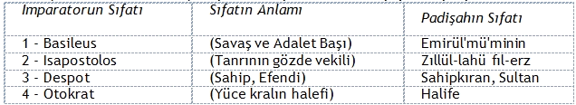
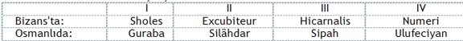

Osmanlı Tarihinin MADDESİ: Osmanlı TOPRAK ekonomisidir. Osmanlı tarihinin bir de RUHU vardır. O da Toprak üretim temeli üzerinde yükselen Sosyal ve Politik Osmanlı Üstyapısıdır. Konumuzun tabanı,Osmanlı Toprak Ekonomi Düzenidir.
Ancak Bedensiz Ruh ve Ruhsuz Beden anlaşılamayacağı gibi: Osmanlı Tarihinin de Toprak Temelinidaha duru anlamak için, Osmanlı Tarihinin Sosyal ve Politik üstyapısına kuşbakışı ile olsun değmek gerekir.
Osmanlı Tarihi "Müze varlığı" için değil, şimdiki yaşantımızın en yakın gelenek-göreneği olarak önem taşır ve aktüelleşir. Osmanlı Tarihinin aktüelleşmesinde üç büyük Tarihcil Devrim altüstlüğü rol oynar:
1) Bizansın yıkılışı,
2) İslamlığın yıkılışı,
3) Osmanlılığın yıkılışı.
Bu üç yıkılış ta birer "Antika İmparatorluğun" devrilişi olur.
O karakterleri ile her üç yıkılışın birbirleriyle ilişki-çelişkileri, birbirlerine etki-tepkileri çok büyük olur. Onun için Osmanlı Tarihinin hangi İnsancıl Ortam içinde geliştiği şu 3 konuda yapılacak kısa açıklamalarla biraz aydınlanmak ister:
1) Osmanlılığın Batış Felsefesi;
2) Osmanlılık ve Bizans;
3) Osmanlılık ve İslamlık.
Osmanlılığa Tarihcil Giriş'in başında: Osmanlılığın Batış Felsefesine dokunulacaktır.
Osmanlılık ve Bizans ilişki-çelişkileri: Osmanlı Tarihinin Ruhu, yani Sosyal-Politik Üstyapısı ele alınırken özetlenecektir. Çünkü Osmanlılığa Bizans üstyapısından, BİÇİM olarak çok şey katılmıştır. Bizans anılmadıkça, Osmanlı üstyapısı, Osmanlı Ruhu kavranılamaz.
Osmanlılık ve İslâmlık ilişki-çelişkileri: Osmanlı Tarihinin Maddesi, yani Ekonomik Tabanı ele alınırken özetlenecektir. Çünkü, Osmanlılığa İslâm tabanından, ÖZ olarak çok şey katılmıştır. İslâmlık anlaşılmadıkça, Osmanlı Tabanı, Osmanlı Maddesi kavranılamaz.
Bu incelemenin, genel Tarih bilimine getirmek istediği Teorik ve Metodolojik çaba; özel Türkiyeaksiyonuna getirmek istediği Pratik ve Stratejik çaba bu Tarihcil Giriş'lerle başlayacaktır.
Bu ayrım, Osmanlılığın insanlık tarih zinciri içindeki benzerine, basamaklarına ve örnekliğine iki sözle değecektir.
Sonra:
a) İngiliz İhtilâli'nden önce, 17'nci yüzyıl başında;
b) Fransız İhtilâli'nden önce, 18'nci yüzyıl sonunda... Osmanlı gözü ile Osmanlı yıkılışının açıklanmasına dokunulacaktır.
Bir topluluğun doğuşundan önce, daha doğmadan, anlatılışına Batışı ile başlamak klâsik mantığa ters gelebilir. Tarih Felsefesi açısından Osmanlılık, daha doğarken, alnında batış damgasını taşıyan bir topluluktu. İslam rönesansı idi. Her İslam Rönesansını yapan topluluk, büyük İbn-i Haldun'dan beri, her doğuşun bir batış alınyazısı ile yaşadığını bilirdi. Her toplumun ömrü 100-150 yıldı [Bkz. Dr. Hikmet Kıvılcımlı, Tarih - Devrim - Sosyalizm].
Her doğan insanın, çarçabuk, bir gün öleceğini bilmesi gibidir bu. O bilgi, hiçbir insanı normalce yaşamaktan alıkoymaz. Onun gibi, Osmanlı Tarihine onun Batış felsefesi ile başlamak, o Tarihin kavranılmasını karartmaz. Tersine, canlı bir çelişkililikle aydınlatır.
Osmanlılığın batışını bilmeyen yoktur. Neden battığı üzerinde Osmanlının kendi düşüncesini öğrenmekle söze başlamak, Osmanlı yaşayışını kavramaya tuz biber katabilir.
İnsanlık tarihinde, kimsenin önceden çözemediği genel kanunlar var. Birbirinden habersiz yaşayan iki ayrı ülkede, aynı ana çizgilere uygun gelişmeler oluyor. Buna en iyi örnek Fransa ile Türkiye'dir.
Batıdaki Fransa, Doğudaki Anadolu'nun benzeridir. Fransa Avrupa'nın, Anadolu Asya'nın batı uç-ülkesidir.
Lakin coğrafya benzerlikleri, tarih benzerlikleri yanında hiç kalır. Anadolu'da kurulan ilk Osmanlısaltanatı ile Fransa'da kurulan Merovenjiyen hanedanı hemen hemen aynı sosyal ve siyasal tiptedirler. Anadolu'nun İkinci Osmanlı saltanatına (Timur'dan sonraki dirilişe) uyan Fransa'nın Karolenjiyen sülalesi, derebeği ufalanışına düştükten sonra, yerini Kapetyen'lere bıraktı ve Kapetyenler Fransa'yı modern rejimine doğru getirdi.
Osmanlı İmparatorluğu, gerçi sonuna kadar aynı adı taşıdı. Osmanlı tarihinde Merovenjiyen, Karolenjiyen gibi ayrı isimli olmasa bile, ayrı tip ve gidişli iki ayrı safha besbellidir. Aynı Osmanlı adı altında, iki Osmanlı saltanatı arka arkaya geldi.
Fransa'da Merovenjiyen'i yıkan barbar salgını Norman'lardan geldi. Birinci Osmanlı Devleti'ni yıkan göçebeler, Timur Tatarları oldu. Osmanlı tarihinin "Devri fetret: Anarşi devri" dediği devletsizlikten sonraki Osmanlı saltanatı -tıpkı Fransa'nın Şarlmany'ine denk düşen- "Muhteşem Süleyman" (Kanunî) ile evrensel bir muazzam imparatorluk olmasına rağmen modernleşemedi.
Osmanlı İmparatorluğu, o zaman Fransa'dan ayrı yola girdi. Bütün kadim imparatorluklar gibi; Sümer, Asur, Keldan, Mısır, Eti, Yunan, Roma İmparatorlukları gibi, uzun bocalayışlardan sonra, yıkılmaya yüz tuttu. Gömülmeden uzun süre önce "Hasta adam" damgası ile yatalak halde süründü.
"Niçin?"ini sonraya bırakalım. Şimdilik "nasıl?" olduğu ile araştırmaya başlayalım.
"Fetret devri"nden Kanuni Süleyman'a kadar en yüksek mertebesini bulan Osmanlılık, Kanuni zamanında en büyük deri değiştirme altüstlüğüne uğradı. Geniş Osmanlı toprakları üzerinde o zamana kadar Şeriatın kutsal parmağı ilea çizilen DİRLİK DÜZENİ, ansızın ve sessizce, yukarıdan bir ihtilâl geçirdi. KESİM DÜZENİ denilen "MUKATAALAR" devrine atladı. Yani, imparatorluğun iktisadi temeli olan TOPRAK rejimi, "ÜRÜN İRADI" şeklinden çıktı, "PARA İRADI" kılığına girdi. Ondan sonraki Osmanlı tarihinin bütün sırrı nedense üzerinde hiç durulmayan, müthiş "laik", hâttâ tam din düşmanı (çünkü bütün Şeriat prensiplerini hiçe sayan), sözde kitaba uydurulmuş devrimde gizlidir. Bu devrimi anlamadan Osmanlı tarihini anlamaya kalkışmak, dünyanın döndüğünü bilmeden, geceyle gündüzü izaha çalışmaktan farksızdır.
Batı Avrupa'da PARA İRADI şekline giren toprak münasebetleri, SERMAYE sözde "birikişi" adı verilen gidişle, Batıyı modern düzene kadar ilerletti. Osmanlı İmparatorluğu, bu ilerlemeye ulaşamadı. Aynı PARA İRADI yüzünden battı. Kanuni Süleyman'ın açtığı yeni çağ, İbn-i Haldun'un bir devlete biçtiği yüz yıllık ömrü bile doldurmadan, soysuzlaşmaya, tekrar derebeğileşmeye, Ayan ve Mütegallibe kankıranına tutuldu... Memleketi "Tedennî"den (alçalıştan) kurtarıp ilerletmek için pek çok şeyler düşünüldü. Islahat teşebbüsleri yapıldı.
Hiçbir çare, Osmanlılığı, Batı anlamında modernleşmeye, kapitalizme götüremedi. Mesela Türkiye, modern İngiltere olamadı. Vakti ile, Fransız krallarının giyeceklerini Paris'e yollayan İstanbul, bugün hâlâ içdonunun modasını bile Paris'ten getirtiyor. Bu ters gidişin derin sebepleri Osmanlı TOPRAK DÜZENİ'nde başlar; UZAK DIŞ TİCARET sözüyle ifadelenen UMMAN Denizi mâceralarında biter. O bakımdan Osmanlılık, doğuramadığı için ölen anaya benzer. Doğuramadığı şey: KAPİTALİZM'dir.
Bununla beraber, insanlığın OSMANLI TARİHİ ie yaşadığı tecrübe çağı boşa gitmedi. İnsanlık tarihinin ondan önceki denemeleri de (bütün kadim imparatorluklar) boşuna geçmemiş, anlamsız kalmamıştırlar. Modern çağa kadar, tarihin, toprak altında mezbuhane sürünen bir yaratık gibi debelenmeleri, en sonunda insanlığı bugünkü aydınlığa kadar getirebilmiştir. Osmanlı Tarihi, kadim imparatorluklar tarihinin, -Rus Tarihi bir yana bırakılırsa,- en son halkasıdır. Kadim medeniyetler zincirinin modern çağa, "BATI MEDENİYETİ" denilen basamağa doğru gelen son halkası Osmanlılıktır.
En son, demek en yeni ve izleri en taze duran bu halka, bütün kanunları, örfleri, maddeleri ve mânâları ile yığılı bir malzeme hazinesi olarak önümüzdedir. Başka memleket tarihlerinde izleri hayli silinmiş, hâttâ kaybolmuş nice olaylar, Osmanlı Tarihinde capcanlı, hâttâ aktüel çehreleriyle yaşamaktadır.
Dolayısı ile, Osmanlı malzemesinin ışığı olmadan, Kadim Tarihi bütün ayrıntıları ile kavramak imkânsızdır. Tarih üzerine o kadar alelacâyip iddiaların bilimce bir türlü kesilip atılamayışı, kısmen de bu eksikliğe dayanır.
Onun için, Osmanlı Imparatorluğu'nun çöküşünde toprak meselelerinin oynadığı rolü, AYRINTILARI ve HER CEPHESİ ile görmek, tekmil insanlık tarihini aydınlatmak için zannedildiğinden daha faydalıdır.
Bize mahsus "Mavi hikaye"lerden biri hatırlardadır. "Osmanlı idaresi neden yıkıldı?" sorusuna verilen kolay cevap belli: "Felaketi vaktinde ve doğru dürüst sezen dahiler Osmanlıda çıkmamış!" "Kaht'i recâl!"(adam kıtlığı) denir. Hakikat ise, bu yayılmış iddianın tam tersidir.
Aynı Osmanlı İmparatorluğu, ilkin o kadar çok değerli adam yetiştirdiği halde, sonra neden adam kıtlığına kıran girdi? Bu kadarcığını olsun kafamızda işlesek, tarihte şahsî kahramanların sebep değil, netice olduklarını sezmekte güçlük çekmeyiz.
Kaldı ki, Osmanlılığın dertlerini keşfeden akıllılar, tam İmparatorluğun batacağı gün zuhur etmemişlerdir. Hastalığı çok eskiden, açıkça teşhis edenler bol bol yetişmişlerdir. Ne çare ki, genel gidiş; Tarih, Ekonomi, Toplum determinizminin kahredici gerekleri, her tedaviyi imkansız bırakmıştır.
Osmanlı İmparatorluğu, söz yerindeyse, öleceğini bilerek, göz göre göre, bağıra çağıra ölmüştür. Bunu, ikide bir başvurulan "ISLAHAT" (reform) lâyihalarından daha güzel anlatacak vesikalar bulunamaz.
Kanuni'nin PARA İRADI devriminden yarım yüzyıl kadar zaman geçmişti. Ancak üç padişah eceli ile öldü. Bir çeyrek yüzyıl içinde, ardarda üç "Hal!" (Padişahı tahtından indirme) patlak verdi. Bir ıslahat yapmaya kalkışan Genç Osman'ın ırzına kadar el uzatılarak canı alındı.
Faciadan ders alan Murat IV'e, "Türklerin Montezkiyösü" denilen Göriceli dönme Koçi Bey, ünlü layihasını inanılmaz bir söz hürriyeti ve gerçekçilikle sundu. Bilginler ve görgülüler olayları açıklamak istiyorlardı:
"Çok zamandır ki dudimân'ı bülend Eyvân'ı saltanat'ı aliyye (dâmet mahfuzatün bil'inayetil-ezeliyye)gamhâ ve hayırhahları olan ülemâ'i ahyar (iyi hür bilginler) ve kemenbeste'i itaat olup nazardan sâkıt olan emekdar kulları ile ahvâli âlemin bu gûne tegayyürpezîr ve şerr'ü şûr ve fitne ve fesadın birun haddı takrir olmasının esbâb ve illeti mülâhaze edip sem'i Hümayûn'u şehriyâriye risâle fırsatçû idik."{1}
İktidar da - o mutlak istibdat çağında- doğruya ağızları ve gözleri kapamak için direnmiyor, herkese danışıyordu:
"... Herkes metâ'ü fikr'ü endişesin ... arz'ı mübadelet kıldı... ki bâis'i ihtilâl'i âlem (evren devrimini yaratan) ve sebebi tegayyür'ü ahval'i beni âdem (insanoğlunun durumlarındaki değişmelerin nedeni) ne idüğü ve biinâyetillâh ne veçhile salâhpezir (düzeltilir) olacağı mücmilen malûm"{2} olsun.
Olayın (Osmanlı çöküşünün) üstyapısı kaçamaksızca; halkın aşırı soyulup ezilmesinden (rüşvet ve zulümden) ileri geliyordu. Bunun eskiden beri değişmez yıkılış belirtisi olduğu ortaya konuldu:
"Zulüm ve rüşvet herhangi Devlette ki peyda ve âşikâr oldu, ol Devlet harap ve yebab ve berkeşte'i ruzigâr oldu."{3}
Yıkımın temeli, toprak ekonomisi düzenindeki bezirgân-tefeci çapulunun getirdiği derebeğileşme biçimleri olduğu gibi ortaya konuyordu. Yüzeyde görünen şey "askeri ihtilâller"di. Aklı erenler, her askeri ihtilâlin bir iktisadi bozukluktan kök aldığını görmemezlik edemiyorlardı:
"Tashih'i asker mürad buyurulsa (askeri düzeltmek isteniyorsa) cümleden mühim zeamet ve timar görülmektedir." {4}
Bildiğimiz ve bu kitapta başlıca belirteceğimiz gibi: -bütün kadim imparatorluk ve medeniyetlerin tıpkısı olan- Osmanlılıkta ekonomi temeli toprak üretimine ve toprak düzeni de ilkin Dirlik düzenine dayanıyordu. Dirlik düzeninin temeli ise: önce Timarlar ve Zeametler sistemi üzerine kurulmuştu.
Demek Osmanlı düşünürü bütün siyasi, içtimai ve askeri altüstlüklerin ekonomik üretim düzensizliğinden çıkageldiğini sezmek için 300 yıl sonra gelecek "Marksizm"i beklememişti: Daha 1630 yılında, 300 yıl sonraki nice "ülema ve vükelâ"mızı utandıracak basitlikle "akça ile halâs" (para ile kurtuluş) olmaz diyerek, insan ezip soymayı ("zulüm ve rüşvet"i) yıkım getirici: "mel'un nesneler"sayabiliyordu. Teşhiste eksiksizdi. Yalnız tedaviyi ileride göremediği için geride arıyordu. Beride:Kesim (Mukataa) düzeninden önceki ilk kuruluş çağının Dirlik (Timar - Zeamet) düzenine özeniyordu:
"Ve kurâ ve mezâri (köyler ve ekinlikler) erbab'ı seyfe (kılıç kişilerine:Dirlikçilerin düzenine)verilmelidir. Ve zeâmet ve timarı erbabına tevzie mani olup, vilâyetin harabına bâis olanlar (Dirlik düzenine engel olup ekonomin yıkımına sebep olanlar) ad olunmak (sayım yapılmak) lâzım gelse ancak otuz kırk âdem olur, ziyade olmaz. Öyle olsa 30-40 âdemin hatırını riayet içün böyle bir Devlet muhtel ve müşevveş olmasını hâşâ ki seâdetlû padişahımız hazretleri caiz görmez."{5}
60 DP'liye seçim hakkı vermekle "Huzur" geleceği, demek bir antika Osmanlı kuralıydı.
Koçi Bey, Türkiye'yi yıkıma götürenleri 30-40 kişi sayıyor. Önünde sonunda, soygunun "reâya"yı (köylüyü ve halkı) ezdiğini rakamla gösteriyor. Yarım yüzyılda vergilerin 80-90,5 akçadan 700-800 akçaya çıktığını, demek 10 misli, hele Anadolu'da koyun başına 40-50 misli yükseldiğini gösteriyor. Devlet vergiden 1 alırken, aracıların 20-30 akça soyduklarını anlatıyor.*
* 50 yılda 10 misli vergi olmuş. Koçi Bey, Padişahın yakasına yapışmış, kıyameti koparıyor. Türkiye'de Cumhuriyetin kurulduğu yıl "Vergi Tahsilatı" 111 milyondu. 1959 yılında 6 milyar 385 milyon, 1963'te 10 milyarı aşkın. Demek 40 yılda vatandaşlar 100 misli vergi ödüyorlar. Saltanat zamanı 5 yılda 1 misli vergi artışı "yıkım" (harabi) ve zulüm sayılmış; Cumhuriyet'in her 4 yılında 10 misli vergi arttırılıyor. (1959 Istatistik Yıllığı, s.381): Herkes övünüyor. Otokrasi (zorba padişahlık) ile paşakrasi (demokratik cumhuriyet) arasındaki fark bu olsa gerek.
Bu gidişe kim karşı koyacak? Padişaha yükleniyor:
"Memâlik'i islâmiyeden bir memlekette zerre kadar bir ferde zulüm olsa, ruz'u cezada (ahirette)mülûktan (Padişahlardan) suâl olunur, vükelâdan (vekiller, bakanlar vs.den) sorulmaz. Mazlumların yanık "âh"ı sarayları yıkar, dertlenenlerin gözyaşı dünyayı boğup yokeder. "Küfr ile dünya durur, zulm ile durmaz." Adalet uzun ömre sebeptir. Ve fakir halkın düzenliliği padişahlara Cenneti verir. Bu dediklerim kelâm benim değildir, bilginlerin ve şeyhlerin (uluların) sözüdür. İtimad buyurulmazsa andan sual oluna. Ahvâl böyledir."{6}
Ve her "Telhis" (özet) inde Padişahı kandırmaya çabalar:
"Elhamdülillaâhi teâlâ seâdetlû Padişahımız hazretlerinin ol makule mal ve menala ihtiyacı yoktur ki, mansıp (iş verme) için kimseden akça ala. Ve mahsus tevabii yoktur ki yolsuz mansıplar verilmek lâzım gele. Cümle âlem seâdetlû Padişahımızın kulu ve muti fermanberidir. Her biri istihkakı üzere, yolu ile riayet olunur. Böyle olıcak, lâyık ve seza değildir ki memleket sahibi ve tanrı kullarının koruyucusu İslamların Halifesi (Peygamber vekili) zerre kadar yararı olmıya da, mansıpları pulluk pulluk satılıp bir alay hâin hazineler ve defineler tahsil edeler ve memleketi yıkıp yakalar."{7}
"1005 tarihinden beri İslam memleketlerinden toplamı 19 eyalet yer elden gitti. Geri kalan memleketlerin dahi kendi zâlimlerimiz yakıp, reâya ve berâya (köylü ve haraç vermeyen halk) perişan oldu. Bu musibet ne musibettir!"
"Taraf taraf İslâm memleketleri elden gitmekte; yine tedbiri görülmez ve ilacı sorulmaz; türlü sefahet eksilmez. Bu gaflet ne gaflettir!"
"Din ve Devlet düşmanları bunca memleketleri alsın ve halk fıkarası eziliş ve horlanışla çiğnensin, katiyen reva görülmez. Bunun tedbiri ve ilacı görülmek Padişah hazretlerine farz'ı ayın ve ayn'ı farz olmuştur."{8}
"Ceza gününde cümlesi seâdetlû Padişahımdan suâl olunur. Öyle ise bunların düzeni ile ilgilenmek farz ve vacip (işlenmesi tanrıca kesin olarak emredilmiş) mesabesinde olmuştur. Bir alay değersiz zevk ve sefâda olup ta seâdetlû Padişahımız sorumlu olmak ne revadır?"{9}
Ve Koçi Bey'in sözü geçiyor. Murat IV yaman bir atılış yapıyor. Belki Osmanlılığın ondan sonraki 150 yılı bu sayede, 2 padişah indirme, 2'si eceli ile ölme, gene 2 indirme yollu dalgalı sallanışlara rağmen, az çok ayakta ve bağımsız kalabildi.
Ama, hastalığın bu kadar iyi teşhis edilmesine rağmen, tedavisi imkansızdı. Eski Dirlik Düzeni'nin geri gelmesi için ilk Osmanlı İlb'lerini (Gazi'lerini) geri getirmek lazımdı. Onların doğru insan ruhu, tarihöncesi insan toplumu ile birlikte sönmüştü. O eşit insan toplumu düzeni yerine, bezirgânmedeniyetin eşitsizliği içlere işlemişti. Koçi bey de bütün iyimser coşkunluğuna rağmen, gerçekçi gözü ile bunu görüyordu.
Toprak düzeni Osmanlı İmparatorluğu'nun ayakları altından kaymış, bezirgan ekonomisine gitmişti:
"Lâkin timâr erbabı evelki mertebesini bulmaz" diyordu. "Zira Defter'i Hâkâni'de isimleri satırlanmış olan reâyâ ve reâyâ çocukları kimi ulûfeli kul namında olup, nice köyler ezicilerin saldırısından yıkılıp yok olmuş ve ehalisi dağılarak kaçışmış, nâm'ü nişanları kalmamıştır. Ana binaen her ne mikdar dikkat olunsa evelki mertebesin bulamaz."{10}
O ekonomik düzeni kurmak için o insanları bulmak gerek.
"Ve can'ü gönülden Padişah hizmetlerine bel bağlıyan ve hizmeti görülen kulları koruyup, olur olmaz günah içün zayi eylememek gerektir. Zira, eyü ve sınangılı (mücerrep) ve Din ve Devleti kayırır âdem azala girer, yaramaz âdem kati çoktur, ve cümle yaramazlar eyülerin hasmıdır. Öyle olsa eyü âdem kızıl kibrit makulesidir, ona göre korunmak gerektir."{11}
Murat IV sahici Din ve Devlet adamı Müslüman gibi on yıl "kötü" kişileri kılıçtan geçirmekle uğraştı. Ama, kötüleri kesmek, "eyü"leri çoğaltmadı. Kime güvenecekti Padişah? "Kul"larına. Gel:
"Bu asrın kulu bir kuldur ki ay be ay tüm gündelikleri peşin verilse ve her birinin tüm levâzım ve mühimmatı (gereçleri, araçları) miriden görülse (Devletçe ödense) ve her biri türlü türlü lütuflara boğulsa, ve dünyada neçe ülema ve mesayih var hep bir yere gelüp, bunlara öğüt ve ısmarlama akıl verse, ve her biri bin nasihatle itaat semtine yedilseler ve: "İslam Padişahına muhalefet, din ve nîkâha zarardır" deseler, birisinin kulağına girmez, ve zerre kadar faidesi olmaz.'{12}
Onun için geri dönülemedi. Ancak yüz elli yıl daha bocalanılabildi.150 yıl sonra, Avrupa Fransız "Ulu Devrimi"ne girince, Osmanlı bir daha debelendi.
En son Selim III'e verilmiş "Nizam'ı Devlet Hakkında Mütaleât" (Tarih'i Osmanî Encümeni Mecmuası'nın 41, 42, 43.üncü nüshalarında, Ahmet Tevhit Beyin hediyesi olarak neşredilen rapor) bu bakımdan olağanüstü gerçekçidir. Raporun "Fevâid-i Hareket ve Nehdat-ı Hümayûn" bahsi, ilkin insana garip gelen bir tez ortaya atar. Raporcuya göre, Osmanlı devletinin bozulması, Padişahın bir yerde oturup kalması "hareket ve nehdat (ayaklanma)"dan uzak düşmesidir. Vaktiyle devleti kuran ilk Padişahlar, daima hareket halinde idiler. Seferde, sınırdan sınıra koşarlar, barış zamanı boyuna seyahat ederler, bir yerde kaldıkları vakit bile, mütemadiyen ava çıkarlardı. Başta Padişahların, arkada Osmanlı kadrosunun böyle yaman göçebe dinamizmine tutkun olmaları, insanları israftan ve sefahatten korurdu. (Raporcu konuşuyor):
"Hâsıl olan varidat menâfıin bir mikdarını iddihar (biriktirmekle) ve hiyni iktızada sefere memuriyetlerinde herkesin haline göre nükuudu (parası)" bulunurdu. "Bir mahalde tûl (uzun boylu)ikamet ile, herkes haddinden ziyade ebniye (binalar) ve esbab'ı ziynet ve melbusat (süs ve giyim) ve mefruşat ve mat'umatı (döşem ve yeyim) müstelzimetül-isrâfat ile kesret-i mesarife düçar ve bizzarure düyunu kesireye giriftar olmamak dekayik-i hafıyyesini (çok borca batmamanın gizli inceliklerini)" unutmak moda oldu.
"Elli altmış seneden mütecaviz selâtini izâm hazerâtı Dârülhilafet-ül İslâmbulda mek-ü ârâm" ederler, diye Padişahlara çatan raporcu, devam ediyor: "Alel ittisal otuz seneden mütecaviz evkatte dahi seferler terk olunup, tene'ümet-ı hazariyyeye iştigal (barış nimetlerinden çöplenmeye uğraşış) ile gerek rüesâ ve gerek bilcümle tavâifı askeriye â'mâl ve eflâl'ı seferiyeyi feramuş (şefler ve erler savaş iş gücünü unutur) ve bahusus askerî zümresinin ekseri hiref ve sanayi ve tüccar güruhüne ilhak(askerler zanaat, esnaf ve tüccar arasına katılma) ile kesb-i kâr ve cem'i mâl ve iddihare me'lûf (kâr edip mal toplayıp biriktirmeye alışık) olmalarile, bittab-i seferden nefret ettikleri" olayını ortaya koyuyor. Bu gidişin sonuçlarını da şöyle sayıyor:
"Cümleye istirahat-i hazeriyet (herkesçe barışta dinlenme) tabiat-i sâniye olmağla, ricâl ve kibâr(devlet adamları ve büyükler) derûn-ü İslâmbulda eflâke ser çekmiş haneler bina ve inşa ve boğaz içinde kezalik refiül-bünyan (yüksek kurulmuş) sâhilhaneler peyda ve mefruşat ve esaeslerinde (ev takımlarında) dahi tekellüfat-ı aziyme ederek ebniyeye muvafık sair levazimat ve matumat ve hadem ve haşem ve elbise ve merkûbatte (bineceklerde) hadd-i itidâli tecavüz etmelerile, menasıpların(gelirli memuriyetlerin) irad-ı tabiîsi ve mâlikâne ve mukataa ve zeametlerinin varidat-ı kadiymesi bir türlü masrafı zaruriyelerini ihate etmediği (gelirli giderlerini kapatmadığı) ecelden, bizzarure bulundukları menaasıp ve hidematta envâi irtikâbat (toprak rüşvetine) ve irtişâyâ (para rüşvetine)mühtaç kalırlar."{13}
Raporcunun izahi, Kolombun yumurtası kadar "kolay" görünse bile, müşahadesi ne kadar kuvvetli! Hatta, İmparatorluktan sonraki olaylara bile aydınlık serpecek kadar gerçek değil mi? İlk zamanlar, cihangirliğe atılan Osmanlılığın, sonraları nasıl keyif ve lükse kayarak, soygun ve zulme doğru soysuzlaştığını, yukarıki çetin cümlelerden açık ne tasvir edebilir?.. Anlatılanlar, olanların tâ kendisidir. Raporcu güzel seziyor. Yalnız, meseleyi fert ve şahıs açısından koyuyor.
İlk Osmanlılar niçin "daimi hareket" halinde idiler? Çünkü, Oğuzhan aşiretinin göçebe Kayı oymağı, Babahanlığın "Kahramanlık Devri"ne gelmiş, otlak arayıp yaşayan bir topluluk idiler. Raporcunun, bu noktadaki hakkını yiyemeyiz. Tezini daha ileride şöyle açar: "Evâil-i zuhur-u saltanatinde âsâr-ı bedâvet mülâbesesile kıllet-i mesarif ve kemâl-i kuvet hasebile irat ve mesarif hususunu tetkikten her ne kadar iğmaz olunursa dahi..." Burada, yüzyıl evelki Osmanlı münevverinden bir bilim terbiyesi ve hakikat dersi almıya ne kadar muhtaç hallere düştüğümüzü hatırlamamak elden gelmiyor. Bazı münevver geçinenlerimiz, hâlâ ilk Osman oğullarına "Barbar" diyeni afarozlamaya hazırdır. Osmanlının kendisi ise, çıktığı yumurtanın kabuğunu beğenmeyen civciv kafası taşımıyor. İlk Osmanlı faziletini"Bedâvet eseri" sayıveriyor. "Bedâvet = Bedevilik", bildiğimiz gîbi, Vahşiliğin üç katından yukarıda bulunan, Batı dilindeki "Barbar"ın Arapça karşılığıdır. İlk Osmanlı "bedevî", daha doğrusu Orta Barbarlık konağında bulunduğu için, "seferî" (savaşı), avı, seyahati (gezginciliği) iş güç etmişti. Onun elbiseye, binaya, süse, yiyeceğe, israfa düşkün olmaması, bu sosyal karakterinden ileri geliyordu. Yoksa, Osmanlılar sadece sefere gittikleri için faziletli kalmış ve israftan kaçınmış değillerdi. Nitekim, sonraları Osmanlılığı yelle yuf eden amillerden biri de, o bitmez tükenmez "sefer"ler olmadı mı?
İmparatorluğu bir yığın seferler kurdu, başka bir yığın seferler yıktı. Osmanlılığın zamanla kaybettiği şey; Sefer, savaş, harb adeti değildi. Sefer, harb, Osmanlının başucundan Demoklesin kılıcı gibi hiç eksik olmadı. Ve hâlâ bugüne kadar, başımıza ne geldiyse hep o "sefer adeti"mizden, kendimizi ebedi bir aşiret seferinde, aşiret reisi emrinde tabiî bulmamızdan geldi... Osmanlının zamanla kaybettiği şey, göçebe barbarlığın yalan dolan bilmez, tertemiz, sapasağlam, adil ve tutumlu insan özellikleri idi.
Bunun önüne geçilemezdi. TARİH İNKİLÂPLARI (Tarihcil devrimler) çağında, yeni bir yapı, bir medeniyet kuran bütün barbarların başına gelen hep aynı şey oldu. Ne kadar yanıp yakılsak, o ilk, basit, çürümemiş barbar insan münasebetlerine artık bir daha geri dönülemezdi. Osmanlılar da, nesilden nesile, kadim medeniyetlerin bıraktıkları yerden başlayıp, medeniyeti, "Bir adım geri, iki adım ileri" yürütmeye girişmişlerdi. Öyle bir toplulukta, büyük toprak sahipleri (raporcunun "mâlikâne, mukataa ve zeamet" sahipleri) ister istemez "eflâke ser çekmiş" (asrımızın gratsiyel adlı göktırmalayanları gibi) "haneler" kuracaklar ve o yapılara uygun ("ebniyeye muvafık") süs, hizmetçi, uşak, bekçi, polis (hadem, hasem) vb.li saltanat sahibi olacaklardı. Müslümanın "kıyamet alameti"saydığı "BİNA ve ZİNA" çoğalacaktı.
Bu ayrımda, çökkün Bizans ve İslâm medeniyetleri önünde, daha taze insan gücünü elinde tutan barbarın, özellikle Bizans'a karşı sembolik yırtıcılığına bir anlık örnek vermekle söze başlandı.
Ondan sonra iki büyük başlık altında, Bizansla Osmanlının karşılıklı çelişki ve ilişkileri belirtildi.
A- Bizans Ekonomi-Politikası Üzerine: başlığı altında, Bizans ekonomik ve sosyal yapısının çeşitli"Barbar aşıları"na rağmen derebeğileşme karakteristiklerine dokunuldu.
B- Osmanlılık ve Bizans Etkileri Üzerine: başlığı altında, Bizans sosyal ve politik yapısının, Osmanlıda en son Göçebe Kayı Boyundan kalmış ilişkiler üzerine geçirilmiş kılıf biçimlerinden kimilerine dokunuldu.
Barbar "Minare"yi "çalmak için" Medeniyet "kılıfı" hep böyle kotarılmıştır.
Osmanlılık, ikisi de çöken iki kadim orijinal medeniyetin, Roma ve İslam medeniyetlerinin yıkıntılarından yepyeni bir sentez olarak doğdu. İslâmdan, onun en sağlam temelini, ilk "Hülefayi Raşidin" (Cennetle müjdelenmiş ülkücü halifeler) çağındaki Toprak düzenini aldı; derebeğileşmiş Doğu soysuzluklarını attı. Bizansın ise, üstyapısından çok biçimler alırken, Bizans temellerini aşındıran derebeğileşmiş toprak ekonomisi özünü havaya uçurdu.
Osmanlının İslamlık önünde davranışı şundandı: Osmanlı yaşadığı çağdaki İslâmlığa hiç benzemiyordu. Hülefayi Raşidin çağındaki İslâm Araplığına çok benziyordu. Osmanlı Türk, 1300 yılındaki Müslümanlardan çok, 622 yılındaki Müslümanlara yakındı. Onun için, Osmanlı, çevresindeki bütün Müslüman devletçiklerini kılıçtan geçire geçire temizler, ezerken, Müslümanlığın en son ve en büyük Rönesansını yarattı.
Osmanlının Bizans önündeki davranışı şundandı: Bizans, kendisini doğuran orijinal Roma medeniyetinin ilk çağlarına hiç benzemiyordu. Ama, karşısında hasım bildiği çökkün İslâm Medeniyetinin tıpkısı idi. Osmanlının dışı: başka hiçbir maddi, manevi üstünlüğü sızdırmayan Müslümanlık zırhı ile kaplıydı. İçi: yendiği Bizans Medeniyetinin muazzam yalan dünyasını hiçe sayan gerçekçi göçebe özü ile dopdoluydu.
Bizans önündeki Osmanlı davranışına, çok kanlı olduğu ölçüde çok ilginç bulunan bir küçük ve korkunç dram örnek olabilir. Fâtih İstanbul'u aldığı gün:
"Büyük Düka Luka Notara ile başka Yunan baronlarını huzuruna getirttikten sonra, İmparatoru kendisinden barış istemek için eğiltmeye veya şehri öylece teslim etmeye kandıramadıklarından dolayı azarladı. Bunun üzerine, hükümdarın gözüne girip Pera'daki Venedikli ve Cenevizlileri gözden düşürmek istiyen Chira Luca her kabahati onlara yükledi... Ayrıca Kalabassayı (Kara Basa: Vezir'i Azam Çendereli Kara Halil Paşayı) da, Yunanlıların dostu olarak suçlandırdı. Ve sözlerinin doğruluğunu ispatlamak amacıyla beriki tarafından yazılmış mektupları gösterdi."{14}
Çökmüş Bizans'ın sağ kalmış en büyük adamı, yenen Osmanlıya, ulu vezirinin Bizans casusu olduğunu ispatlıyordu. Osmanlının tepkisi ne oldu? Çendereliyi Edirne'ye yolladı; orada boğduracaktı: Muhbir'i saadık Luca'nın ise:
"İki oğlunu gözleri önünde öldürttü. Henüz büluğa ermemiş olanını da kendi arzularına ayırttı. Chira Luca'nın kendisine gelince, onun öteki baronlarla birlikte boynunu vurdurttu."{15}
Bizans bu duruma neden düştü? Derebeğileştiği için.
Bizans bin yıl yaşadı. Ama, daha kurulurken ölümünün bütün sebeplerini toptan benimsedi. Bizans'a bin yıl dayanacak surları 4 yılda yaptırıp, kendi adını veren Konstantin, Konstantiniye'ye Roma'nın yalnız allahlarını sokmadı. Roma'nın Senatosunu, Tribünlerini, Kürilerini, hatta Kapitol'ünü, saray, su yolu, terme ve portiklerini, Roma'da oldukları gibi kurdu. Sayelerinde üstün geldiği hıristiyanlara da 10 yıldan beri tanıdığı kadim "tapınağa sığınma hakkı" ile her türlü vergi ve angaryadan muaflık gibi imtiyazlar tanıdıktan başka, 11 kilise yaptırttı.
Hıristiyanlığı yaratan kölelere, keyif için öldürülme ve işkence yapma, çoluk çocuğundan ayırma gibi işlemleri az çok yasakladı, ve haftada bir güncük olsun dinlenme hakkı olan Pazar tatilini sundu. Ama, bütün bu yenilikleri, çökmüş Roma'yı, Bizans'ta aynen bin yıl daha yaşatmak için yaptı.
Romalı rakiplerini temizlemek için olduğu kadar, köleliği ve barbarlığı yumuşatmak için, Sümerlerden beri yaşamakta direnmiş olan Kent ruhunu kökünden kazımak için, hıristiyanlıktan daha elverişli silah bulamamıştı. Modern Kapitalizmin "Sosyalizm" için yaptığı gibi, Roma'nın ruhunu Bizans'ta yaşatmak için Roma'yı öldüren hıristiyanlığı Roma İmparatorluğu kılığına sokup, Bizans'ın emrine geçirdi.
Onun için, Osmanlının yıktığı Bizans, DİNCİLLİK ve MEMURCILLIK bakımından, Birinci Konstantin zamanında ne idiyse, ana çizilerinde Sonuncu Konstantin zamanında da o oldu. Çünkü Birinci Konstantin, bugünkü surların içine sardığı İstanbul'a, çökkün Roma'nın iki büyük afetini: "Tanrıcıl hiyerarşi" ile "Memurların ordusu"nu aynen soktu. Konstantiniye, Ankara gibi, bir memurlar şehri olarak doğdu. Roma'nın en zengin aileleri İstanbul'a taşındı. Osmanlılıkta "fodlacılık" biçimine girecek olan "halka bedava öteberi dağıtma" usûlü taşındı. O kadar ki, İstanbul'u Roma'nın tıpkısı yapmak için,"Yerler yedi tepe sunduğu halde, şehri Roma gibi on dört bölgeye böldü."{16} "Daha önce Dioclétien, haşmetpenah beyefendiyi daha saygıdeğerleştirmek üzere göze görünmez kılarak, Asyalı tumturaklılıklarla kendisini sarmalamıştı." "Uzun ve bilgiççe bir hiyerarşiye (basamaklaşmaya) göre yerli yerine oturtulmuş kalabalık bir idareciler personeli halkla İmparatorun arasına sokuldu."{17}
Sonra, (Osmanlılığa "Asâletlu", "Necabetlu", "Fehametlu", "Atufetlu", "Semahatlu", "İzzetlu", "Fütüvvetlu" ve ilh. tekerlemeleri biçiminde aynen aktarılacak olan) çökkün Roma elkabı, Roma'dakinden daha keskince oturtuldu. Prenslere: "Nobilissimi"; Konsül'e, Prefe'ye ve 7 Bakan'a:"İllustre"; Prokonsül'e, Viker'e, Kont'a, Piskopos'a: "Spectabilis", "Egregii" gibi lâkaplar vardı ki, çöküş devrine varan Osmanlı da onları mal bulmuş mağribi gibi çevirip çevirip kullanmayı şeref bilecekti.
Soysuzlaşan medeniyetin insanı, kelini takkeyle örter gibi, ünvan ve rütbe etiketi taşımayı bir marifet sayıyordu. Fakat bin beş yüz yıl öncesi için bile, poz lakırdıları toplumu kurtarmaya yetmedi. Bugün artık okul kitapları bile açıkça yazıyor:
"İmparatorun kutsal kişiliğini sarıp saklayan memurlar ordusu, resmi dilce denildiği gibi, o tanrıcıl hiyerarşi (ilahi kademelik) sarayın parlaklığını artırdıysa da, hükümetin gücünü arttırmadı. Kamu iyiliğine çalışmaktan çok, beyefendisine yaranmak çın kaygı çeken bu uçsuz bucaksız personel için birtakım maaşlar gerekti. İdare masrafları arttı. Yoksulluk çoktan beridir en zengin vilâyetleri bile yıpratırken, daha çok vergi istedi. O zaman, vergi alanla vergi veren (maliye ile mükellef) arasında bir hile ve zorbalık savaşıdır başladı, ve ahaliyi içerlettikçe, yurtseverliği son kalıntısına dek söndürdü."
"Eski zamanın hür müesseseleri Belediye düzeninde henüz yaşıyordu. Her şehrin kendi Senatosu, Curie'si vardı. Bu senatolarda, en az 25 arpantlık (125 dönüm kadar) toprak sahibi olan küryaller (Curie'liler) toplaşarak belediye üzerine müzakerede bulunurlar, ve kendi içlerinden, kendilerini idare edecek majistralar (belediye memurları) seçerlerdi." "Ama, vergilerini kendileri toplamakla görevli olan küryaller, vergi karşılıklarını kendi mülkleriyle garanti ediyorlardı. Bu yüzden yaşama koşulları gittikçe yoksullaşacaktır. Bundan yakalarını sıyırmak için, klerje (papas mesleği: Osmanlıda "İlmiye") ve ordu gibi imtiyazlı heyetler içine canlarını atacaklardır. Fakat onlar oralardan zorla çıkarılarak, ölünce çocuklarının geçecekleri küri'deki yerlerine geri getirileceklerdir. Böylelikle, artık bütün kentlerde (site: beldelerde) küryallerin (orta halli üretmenlerin) sayıları azaldı."{18}
Demek, bizdeki devlet kapısına dadanma gibi, iş tam çıkmaz çembere dönüyordu: Memur arttıkça, vergi artıyor; vergi arttıkça, memur çoğalıyordu. Vergiler, bugünkilerle kıyaslanabilirler:
1 - İndiction (varlık vergisi): Herkesin, her 15 yılda bir yapılan kadastro ile (Osmanlıların "Tahrir" diyecekleri yazım), "Cycle des indictions" yoluyla belirtilmiş olan zenginliğine göre ödediği vergi.
2 - Veraset Vergisi: 20'de bir.
3 - Satış Vergisi: Mal fiyatının 5'te biri.
4 - Capitation: (Baş Vergisi): Köle başına, mülksüzlerce ödenen cizye.
5 - Gümrük resimleri.
6 - Chrysargyre: Her dört yılda bir, küçük tacir ve esnaftan alınan bir çeşit kazanç vergisi. (Her yıl değil!)
7 - Aurum coronarium (Altın Taç): İlkin büyük resmi olaylar üzerine, Konsüllere ve İmparatorlara halkın isteğiyle gönderilirken, zamanla mecburi vergi olur.
Ancak, bizim Demokrat Parti usulü, büyük varlıklılara pek dokunturtulmuyordu. Kuru kalabalıkların oy'larını satın almak üzere, hazırcı, tembel ayaktakımına bedava dağıtımlar yapmaya da yarayan bu vergiler, topraktaki orta üretmenler için yıkım oluyordu.
"Bu vergi yüklenmeleri, en zenginler için hiç ağır olmadıkları veya cüz'i, ağır oldukları ölçüde, alçak ve orta varlıklılara ağır basıyordu. Nobilissimi'ler, Patrici'ler, İllustre'ler, Spectabele'ler, Clarissimi'ler, Perfectissimi'ler, egregii'ler, bütün saray adamları, bütün divan asilleri ve klerje (papas sınıfı: ilmiye) küryallerin sırtına yüklenen en ağır vergilerden af edilmişlerdi. 25 arpanttan (125 dönümden) az toprak sahipleri ile, esnafları, tacirleri içine alan üçüncü sınıf, basit hür insanlar sınıfı, daha az bahtsız değillerdi (Bugünkü bazı sendikalar gibi). Bilhassa Alexandre Sévére'den beri şehir zanaatkârlarının kurdukları loncalar, cezaevleri haline gelmişlerdi; hükümet esnafın loncalardan çıkmalarını yasak ediyordu. Köylerde büyüklerin zorbalıkları veya hileleri ile, yahut barbar salgınları yüzünden mülkleri ellerinden alınan küçük toprak sahipleri, en sonunda zenginlerin colonları (sömürge kulları) durumuna sokulmuşlardı. Bu şart, köylüleri ünvanca insan olmaktan çıkarmasa bile, insan haklarının hiç değilse çoğundan yoksul ederek toprağa bağlıyordu."{19}
Bu tipte, daha doğarken ölüm soysuzlaşmasının bütün zehirlerini taşımış bir Bizans, İbn-i Haldun'un "Tavâifülmülûk"e biçtiği tek bir insan ömrü kadar yıl bile yaşayamazdı. Nitekim kalamamıştır da. Klasik tarih, Bizans İmparatorluğunu 1000 yıl ayakta tutar. Hıristiyanlık, "fatidik" bir dünya sonunu bekliyordu. Haçlı Seferi'nin baştan kara vuruşu çemberi yarmasaydı, belki 1000 yılı Bizans'a son olacaktı.
İsâ'nın ilk bin yılı, Bizans'ın değil, yüce barbarlığın yaratığıdır. Başta Bizans kentini "Konstantinopoli"yapan Konstantin'in kendisi barbar köktendi: bugünkü Yugoslavya'nın Niş kasabasında doğmuştu. Konstantin'den yarım yüzyıl sonra "Konstantiniye" onmaz iç yaralarının en öldürücüleri ile kıvranıyordu bile.
Hunler'den kaçıp gelen Vizigot barbarları'na, iç çürüklüğü yüzünden, Tuna'nın güneyinde yurt veren Imparator Vales, 395 yılı o barbarların elinde öldü. Ve imparatorluğu, barbar usulü ile iki oğlu arasında paylaşıldı. Arcadius, Batı Roma İmparatoru oldu. Doğu imparatoru Honorius'ün ilk işi: başlarında Alaric bulunan Vizigotlar'ı, kardeşi Arcadius'un üzerine saldırtmak oldu. Böylece, tarihin ünlü "Bizantizm"i başladı. Yarım yüzyıl geçmedi. İmparator Théodose II (408-451), satın alacağım sandığı Hünlere haraç vermekle kendini kurtarabildi.
Çeyrek yüzyıl geçmedi. İmparator İsaure'lu (Silifke civarlı) Zénon, Vizigotları bir daha karşısında görünce, Bizans'ta yetiştirilmiş olan Vizigot başkanı Teodorik'i, gene Batı Roma'nın başına belâ etti. En parlak Bizans rönesansını yaratan, Roma kanunlarının büyük derleyicisi Justinien (527- 565) kurucu Konstantin gibi bir İslâv barbarıydı.
Bütün o yüzyıllarda belki Bizans barbarlarla oynuyorum sandı. Gerçekte, barbarlık Bizans'ı el topu yapmıştı.İlk bin yılın ardarda üç büyük akın yapan barbarlığı, Tarihöncesinde Neandertal insanın Avrupa'ya geçiş yolları ["Doğudan (Çin'den batıya) Avrupa'ya geçiş için tek coğrafya yolu: Kırım'ın kuzeyindeki dar bölge ile Moravya'dır" "Neandertaller, yolu ilk açanlardır" (Dr. Hikmet Kıvılcımlı, Tarih Tezi, s.169-172)- y.n.] üzerinde kaynaşmasaydı, sapaca düşen güney boğazında Bizans'ın tünediği hisarlık, Osmanlılıktan çok daha önce yelle yuf olurdu.
19 ncu yüzyıl ortasında yeryüzünü 13 ncü yüzyılın Haçlıları gibi görebilen Batılı tarihçiler, Roma'nın yıkılışında barbarlığın oynadığı rolü: "Tanrının öngörüsü" (proviolence de dieu) sayarlar. "Tanrının öngörüsü, hıristiyanlığı düşman bir medeniyetin bütün kalıntılarından kurtaracak olan ulusları vahşi dinlerde birleştiriyordu."{20} Yani, Roma da barbarlar da "Pagan" (müşrik)idiler. Roma'nın "Medeni Paganizm"ini, barbarlığın "Vahşi paganizm"i yıktı. Roma'nın siyasi kurulları medeni paganizme çok bağlı kaldığı için, Roma'nın barbarlarca yıkılışı, paganizmin de yıkılışını getirdi ve hıristiyanlığın kolayca bir saray ihtilâli ile tahta geçişini sağladı.
"Bu hal Doğu İmparatorluğu'nda aynı yaygınlıkta ve aynı kudrette etki yapamıyordu. Bizans başkentinin hemen hemen saldırılamaz durumu sayesinde, Bizans İmparatorlugu barbar akınlarında Roma'dan daha az zedelendi. Paganizm - orada siyasi kurullarla daha az samimiyetle birleşikti. Paganizmdeki yıkılışın karşı vuruşunu Bizans daha az şiddetle hissetti. Ama, gene de bir dereceye kadar ve hâttâ barbarlar İmparatorluk sınırını aşmazdan önce bunu hissetti."{21}
Demek, Bizans'ta da "Medeni müşriklik" ile birlikte siyasi müesseseler sarsıldı. Sarsıcı vurucu güçbarbarlıktı. Barbarlık, sınırlara yığılır yığılmaz, Bizans'a ağır bastı.
"Siyasi müesseseleri paganizmden ayırma hedefini güden harpler sırasında ve bu harplerin yoldaş oldukları bir çok afetler etkisi altında, şehirlerle taşralar, kadim ahalilerin nüfusunu yitirdiklerinden (Not: Prokop, "Akdeniz'i çevreleyen memleketlerde harp, veba ve kıtlıkla, Jüstinyen zamanı birçok milyonlarca insan yokoldu." der), onların yerine geçirmek için ancak katışık bir nüfus bulabiliyorlardı. Bu nüfusun boyuna içe sızması (infiltration), ister istemez eski milli ve dini ruhu bozuyordu. İmparatorluk sinirsizdi, bitkindi. Hemen hiç asker yetiştirmiyordu. Hükümdarlar, büyük masraflarla, komşu bölgelerden asker toplamak zorunda kalıyorlardı. Her yanlarından saldırıcı barbarlara karşı, hiçbir vakit barbarlardan başkasını karşı çıkaramıyorlardı. Konstantin zamanından beri, İmpatorluk orduları yalnız Gotlardan veya Sklavonlar'dan mürekkepti. Bunlar, az çok uzun bir askerlik hizmetinden sonra, İmparatorluk teb'alığına giriyorlar, orada kesince yerleşiyorlar, kimi en yüce mevkilere yükseliyorlardı."{22}
Demek, barbarlık Roma'yı dışından, Bizans'ı içinden fethediyordu: İkinci Bizans demek olan Persler bir yana, Gotlar, Avarlar, Bulgarlar, Sklavonlar, hatta Haçlı "Latinler": Bizans'a çullanmış barbar akınlarıydılar. "Bu istilâlar ortasında, herşey hemen aynı zamanda yıkılıyordu. Tanrı tapınakları yağma ediliyor, tahrip ediliyor, yahut şehir yangınlarında yok oluyordu."{23}
Barbar akını yalnız yıkmakla kalmıyordu. Bizans'a sık sık barbar aşısı da yapıyordu: "Tanrı uygun gördüğü her önemli ilerleyişte, o geniş heyetlerden birini ilerleyişi başarmak için biçimlendiriyor, sonra, tarihcil görevleri (misyonları) biter bitmez, onları da dağıtıyor{24}" idi.
"Makedonya sülalesi", "Latin İmparatorluğu" gibi çeşitli adlarla Bizans, ikide bir "Barbar aşısı" yiyerek, boyuna yıkılıp yapıldı. Roma gibi önü sonu tutan, kesintisiz, tek köklü Bizans diye bir toplum bütünü yoktu. Hıristiyanlığın kışkırtmalarıyla sahneye çıkmış her barbar, bir yol bahtını Bizans'ta denedi. Bizans, imparatorlukçuluk oynamak isteyenlerin kumarı için sembol idi.
Ancak, barbarlık, eline geçen toprakta yerleşik değildi. O, çapul ve şan diye gününü gün ediyordu. Kendisi farkına varmaksızın, köleliğin kurtarıcısı gibi sahneye çıkıyordu. Kendisini tanrıcıl Roma yerine geçirir geçirmez, barbarlığın: Kandaş eşitliğini, hür ve silahlı toplantılarını, her görevi bilerek seçimle verişini unutuyordu. Yığınları bir Pazar tatili ile kandıran Kilise, toprakları ele geçiriyordu.
1000 yıllık kanlı kumarı kim oynarsa oynasın, parsayı toplayan Kilise, hapishane "manacı"sı gibi, en sonunda tek kazanan oluyordu. Fransa ve İngiltere topraklarının beşte birini, Almanya topraklarının üçte birini, Bizans topraklarının hemen hemen tümünü yutmuştu. Konstantin, Kiliseye toprak ve gelir yutmak imtiyazını bağışlamıştı. Sonra gelip geçen bütün krallar ve imparatorlar bu imtiyazı azıttırmak için can vermişlerdi:
11 nci yüzyıldan beri Bizans'ta: "Toprakların tümüyle Kilise ve Manastırlara geçmesi, hazinenin gelirlerini azaltıyordu. Rahiplerin imtiyazı orduyu güçsüz duruma sokuyordu." "İmparatorlar, ehalisinin vergisini arttırmaya başladılar. Kilise ile bazı imtiyazlı sınıflar vergiden şerbetli oldukları için, bütün yük köylü ile esnafa yükletildi." "Ahlak büyük bir soysuzlaşmaya uğradı. Rüşvetle irtikâp, Bizans bakanlarının birkaç elma ile kavuna tenezzül etmelerine dek ilerledi."{25}
13 ncü yüzyılda, Avrupa hıristiyan gaazileri en son "Haçlı Seferleri" ile Bizans'a bir daha barbar aşısı yaptılar. En yavuz ağa olan Kilise zagonu altında bu aşı, Bizans toprak ekonomisindeki kaşarlanmış derebeğiliği kökten temizleyemedi. Venedik, Ceneviz gibi İtalya kentlerinin bezirganlarını Karunlaştırdı. Bizans topraklarında Bizans ticaretine en büyük rakip halinde yıldızlaştırdı. Bu rakipler, Bizans'ın yüreğine zahmetsizce işledikleri vakit Rumların düşmanlığı son kertesini buldu.
VIII nci İoannes Paleologos (1425-1448) zamanı, "İmparatorluk Mahkemesi Hakimi" olan Gennadios Skolarios,1439 yılı Osmanlı tehlikesine karşı iki Kiliseyi birleştiren Floransa Konsilinde:
"Ortodokslarla Katolikleri birbirine yaklaştırmak için büyük çaba gösterdi. Fakat, memleketine dönüşünde, Bizans halk ve papazlarının "Mel'un Latinler"e karşı şiddetle aleyhtarlıklarını görünce davranışını değiştirerek, Batılıların muhalifı kesildi."{26}
" Latin aleyhtarlığı onu Müslümanlara karşı hâlâ Batının yardımını uman VIII nci İoannes'in halefı XI nci Konstantin (1448-1453) den uzaklaştırdı. Ve dolayısıyla Pantokratos Manastırına (Zeyrek Camiine) ekiltti."{27} "Orada kendisini ziyarte gelen Sizmatikleri (râfızî'leri), Franklarla olan dostlukları yüzünden azarladı."{28}
Bu Latin düşmanlığı, son dakikada Rumların Bizans kapılarını Osmanlıya açmalarına vardı: Kaptan Zuane Zustignan, sol koltuğundan okla yaralanınca, "Başında bulunduğu karakoldan gizlice ayrılıyor".{29}
İmparator Onu buluyor: "Yaran öldürücü değil, acıya dayan, erkekçe dur ve vatan için dövüş!"{30} diyor.
Karakoldakiler, "Ölmesin diye kaptanlarının peşine düştüler. "Kaptanımız, kapının anahtarını odacınıza veriniz" diyorlardı. Kapı açılınca, geçmeye uğraşıyorlar. Kaptan da Pera'ya kaçıyor."{31} Kapıdaki boğuşmada yalnız "Latin asilleri" dövüşüyorlar.{32}
Böyle günleri, İmparatorla Bizans derebeğileri arasında yapılan uzun toprak kavgaları hazırlamıştı."Osmanlı İmparatorluğu kurulurken, bu mücadele son safhasına varmış, beğler lehine neticetenerek, büyük bir kısım toprakların mülkiyeti ile birlikte, devlete ait nüfuz ve selâhiyetlerin de malikâne sahiplerinin ve kilisenin eline geçmesini gerektirmişti."{33}
Osmanlılık kurulduğu günden beri, birçok "Tekfur"ların (Bizans derebeğilerinin), hıristiyan imparatorlarına karşı Müslümanlarla elbirliği yapmaları, kavganın ne derece kanlı bıçaklı olduğuna belgedir.
Bu tutum, kadim toprak ekonmisi düzenini sarmış tefeci-bezirgan sermayenin ezelî (7 bin yıllık medeniyet kadar eski) ve her Tarihcil Devrimde "TEKERRÜR" eden durumdur. Tefeci-Bezirgan sermayenin, vatanı, dini, imanı gibi, izanı da vurgundur. Türklerin Ayasofya'ya girişini anlatan Latin yazarı şöyle bağırır:
"Dünyanın hiçbir yerinde bulunmayan miktarda eski ve yeni hazinelere el atıyorlardı. Gizlenmiş ne varsa, hep Türklerin eline geçiyordu. Sizi gidi zavallı Yunanlılar sizi! Bir de kendinizi fakir göstermek istiyordunuz, ha! İşte bütün zenginlikleriniz artık ortaya çıkmıştır. Oysa, siz onların üstüne oturmuş, şehrin savunması uğruna vermekten kaçınmıştınız!"
"Hey tanrım! Günahkar kullarından nasıl da acımaksızın yüz çevirdin! O görülmedik gurur, imanda kusurlar, tanrıyı ve azizleri küçümsemeler, zalimce işlenen günahlar, fahiş faizle ödetilen borç para vermeler, fakirlerin kanını emmeler... İşte bunlar hep şehri böyle bir cezaya müstahak kıldı!" "Vatanlarının soyguncusu, pinti Yunan asillerinin şirretliği büyük oldu. Bu adamlardan zavallı Imparator, kaç kere gözyaşı dökerek, ücretli asker tutmak için para istedi. Ama onlar, mahvolduklarını, züğürt düştüklerini and içerek iddia ediyorlardı. Oysa, Türk hükümdarının eline düşünce, hepsinin son derece zengin oldukları meydana çıktı."{34}
Osmanlı, daha ilk "dörtyüz arslan"lık bir göçebe oymakcağızken böyle bir kördüğümle yüzyüze geldi. Ne yapacaktı? Toplum yapısının temellerine toz kondurmaksızın, kiremitlikte, el çabukluğu marifet, sözde "devrimci" mart kediliğine mi çıkacaktı? Keserken acımadığı Bizans baronlarının yerlerine mi oturuverecekti?
Herşeyden önce, bu soysuzluğa, içinden çıkmakla birlikte, onu yalansız yiğit yetiştirmiş olan tarih öncesi toplum kişiliği katlanamazdı. Ondan sonra, Ahmet Yesevî'nin yola çıkardığı Horasan erlerinin Müslümanlık anlayışları buna el vermezdi. Onlar, kırıp dökücü saf çocuk barbarları birbirlerine kırdırıp döktürerek, eski dünya derebeğilerinin topraklarına oturmayı kuracak sinsi Din saltanatını rüyalarında görseler hayıra yormayacak ülkücülerdi.
Beride, her yanı yıkılan toplumun, Tefeci-Bezirgan zincirleriyle sımsıkı bukağılanmış derebeğileşme soysuzluğu, ekonominin temeli olan TOPRAK ile İNSANI çürütmüştü. Hem bu çürüyüş, yalnız hıristiyanlıkta ve Bizans'ta kalmıyordu. Müslüman Anadolu'nun Selçuk Hükümdarlığı ununu elemiş, eleğini asmıştı. Her yer "Tavaifülmülûk" derebeğiliğinin daniskasıyla çürüyüp dağılıyordu.
Hatta, Osmanlılık bile bu ufunet ortasında Yıldırım Beyazıt'la patlak veren soysuzlaşmaya kurban gitmişti. Timur Moğollarının barbar akını, kahir yüzünden lütfetti: Osmanlıdaki derebeğileşmeyi paramparça etti. Osmanlının ilk göçebe gelenekleri, Simavnalı Şeyh Bedrettin kuşağı Akşemsettin gibi Horasan çırasını elinden düşürmeyen bilginlerin ışığı altında rönesansa uğradı.
Fâtih Mehmet, Bizans'a çuvaldızı sokmadan önce, Osmanlıya iğneyi batırdı: Dine ve Kayıhan töresine aykırı Tefeci-Bezirgan soygunlu toprak ağalığının kökünü kazıdı. Halkı yoksulken, "özel sermaye" diye tutturup, "her mahallede bir milyoner" cambazlığına çıkmadı. "İstanbul'u fetheden Mehmed'in hemen hemen umumi denecek sistematik bir "tensikat" emretmek kuvvet ve iradesini kendisinde bulmuş olduğu..." belliydi.{35}
Fâtih, mal mülk hırsı ile derebeğiliğe eğgin bunak kodamanları İskenderce kesti: "Müşavir paşalarına ve komutanlara muhteşem bir şölen verdi. Şölen sırasında bol bol altınlar, inciler, altın elmalar ve başka pek çok mücevherler getirtti. Yemekten sonra, kumandanları bunca altın ve mücevheri paylaşsınlar diye getirttiğini söyledi. Çünkü, hıristiyanların hediyeler göndererek, onların zihinlerini İstanbul'u kuşatmaktan ve ele geçirmekten çelmeye çalıştıklarını işitiyordu. Kendi kanısınca, onlar, o değerli şeyleri hıristiyanlardan alacaklarına, daha dürüstçe kendisinden almalı idiler. Bu sözleriyle adamlarını öyle bir girişkinliğe kandırdı. Her biri kendisini izleyeceklerine and içtiler. İstanbul'un alınamayacağını söyleyen yaşlı müşavir paşaları uzaklaştırdı ve yerlerine dileğine uygun daha gençlerini getirdi."{36} Yiğitlik, İskender pozu takınmakta değildi...
"Fâtih'in yapmaya muvaffak olduğu derin ve manalı islahatın şümul ve vüs'atı hakkında kati bir malumata tesadüf edilmemekle beraber, bu hareketin bir reaksiyonunu temsil eden Veli Beyazit zamanında yazılmış birkaç defter'de sahiplerine iade edilmiş mülk vakıfların kayıtları üzerindeki tahsislerden istidâl olunur."{37} "Birçok malikâne hassalarının tenzil veya ilga edildiği, sahiplerine terk edilenlerinin de muharebe vukuunda asker göndermek mecburiyeti tahmil ve bu mecburiyetin adedinin arttırıldığı ya bizzat kendisinin "eşmek" veya "iyice bir cebelu" göndermek gibi kayıtlarla ağırlaştırıldığı görülmektedir."{38}
İşte kendi evinde dürüst idare ve yeryüzünde büyük iş yapma budur. Değil Müslüman fukarasının, hıristiyan köylülerinin de din düşmanı Osmanlıyı kurtarıcı gibi karşılaması bundandır.
Bir soru: Osmanlı Tefeci-Bezirgan düşmanı görünüyor. O zamanki ticaret "bezirgânlık"tı. Osmanlının cihangirliğinin tarihcil sebeb: cihan ticaret yollarını açması olunca, ortaya bir çelişki çıkmıyor mu?
Evet, çıkıyor. Fakat bu çelişki saçma değil, görüldüğü gibi gerçek'tir. Ve o gerçek tezatlardır ki, insan şuuru ile yürümeyen tarihe zemberek ve yay olmuştur.
Osmanlı, Tefeci-Bezirgan kördüğümlü derebeğileşmenin, toprak gibi insanı da nasıl çürüttüğünü biliyor, görüyor ve bundan öç alırca davranıyordu. Ancak, modern bilginlerden çok önce, ilkel sosyalizm içgüdüsü ile, insan çürümesini fatal (mukadder ve meşum) bir kaçınılmazlık saymıyordu.Rahat müslüman realizmi ile, bir insanın hıristiyan kilisesince damgalanmak istendiği gibi, doğuştan"günahkâr", suçlu ya da ahlâksız bulunacağına inanmıyordu. Çürümüş insanı acı duymadan, "tavuk keserce" kılıçtan geçiriyordu. Ama, hıristiyan çocuklarını küçük yaşta Türkmen evinde yetiştirerek Müslümanlığın o zamanki en keskin kılıcı olan "Yeniçeri" durumuna sokabiliyordu.
Bunu, Bizans gibi, bütün hıristiyan dünyası da biliyordu:
"Yıllarca öncesi Floransa'lı Porcellana (Bu Türk bir gün, -zararını biz çekeceğiz- gelip çocuğu alacak, siz de bir türlü yerinizden kıpırdayamayacaksınız"{39} demişti. Osmanlı, "bilgiçlik" taslayan IRKÇI kılkuyrukluğa sapsaydı, ortada Osmanlı mı kalırdı?
Ticaret önünde de Osmanlının tutumu bu gerçekçiliğe uygundur. Fâtih, Venedikliler'e karşı kızıştırdığı Cenevizlilere ticaret imtiyazı verdi diye, çok bilgiç sitemi duyduk. Önce, ecnebiye avuç açıp kendini sömürgeleştirerek mi yaptı bunu? O zamanki hıristiyan Zorgo Dolfin'i dinleyelim:
"Ah şu Cenevizliler! Ters ve mutluluksuz bir kararla... Türk'e elçi ve anahtarları gönderiyorlar. Hükümdar, kendi paşalarından birini adliye işleriyle ugraşmak görevine atıyor. Kaçanların bütün zenginliğine el koyuyor. Pera surlarının yıkılmasını buyuruyor."{40}
Bu şartla, Mehmed'in verdiği imtiyaz şudur:
"Ben yüce hakan ve deniz güçlerinin başbuğu, Sultan Murat beyin oğlu yüce Haakan ve deniz güçlerinin başbuğu Sultan Mehmet, göğe ve yere egemen olan Tanrı ile büyük peygamberimiz Muhammet adına, biz Müslümanların benimsediğimiz ve kanunlaştırdığımız yedi kuralla, Tanrımın 123 bin peygamberinin adına, dedemin, babamın ve yaşamam ile çocuklarımın yaşaması ve kuşandığım kılıç hakkı için and içiyor ve diyorum ki, mâdem beğlik katıma, benim hakanlığıma boyun eğmek üzere bütün Galata soyluları ile sayın ve necip Babilaos Palavixin'i, Marchio di Franchi'yi ve tercüman Nicolazo Pavizon'u kullarım olmayı kabul etmem için gönderdiler: kendi töre ve adetlerini memleketimin her yanında muhafaza etsinler, barındıkları Pera'nın işlerini kendileri çevirsinler. Bütün zenginlikleri, ev, mağaza, bağ ve değirmenleri, ticaret eşyaları, çoluk çocukları, uşakları kendilerinin olsun. Memleketime bağlı ulusların yaptıkları gibi onların da ticaretle serbestçe uğraşmak ellerinde olsun. Karada ve denizde gidip gelebilsinler. Memleketin öteki bölgelerinde adet üzre verilen haraç müstesna, artık bunlar da başkaca vergi vermesinler. Gelecekte benim için aziz kimseler olsunlar. Ben bunları memleketimin başka bölgelerinde oturanlar gibi savunacağım. Kiliseleri kendilerine kalsın. İlahi söylesinler. Ama, çan ve simandirio çalmasınlar. Ben onların kiliselerini cami yapmayacağım. Ama, onlar da başka kilise kurmayacaklar... Yurttaşları Cenevizli tüccarla, ticaret eşyaları ile, çoluk çocukları ile serbestçe gelip gitmek ellerinde olsun... Önceden almış olmaları gereken vergileri tahsil etsinler... Paralılar,kendi tüccarları arasında çıkacak davalara bakmakla görevli bir hakimi kendi aralarından seçmekte serbest olsunlar."{41}
"İmtiyaz" dedikleri nedir? O vakitler hiçbir bezirgan öteki bezirgana böylesi davranmadığı için adına İmtiyaz deniyor. Memleketin her insanı gibi, kulluğu benimseyen Cenevizli de, ("Demokrasi" lafları gevelenmeksizin) eşit vergiye, eşit hakka, eşit savunmaya kavuşacak. Başka ne hali varsa kendisi görecek. Osmanlı, en son lugat kitaplarına dek "Hâşâ min huzur tüccar" diyerek, bezirgandan tiksinecek. Ama, medeniyetin zehirli ilacı ticaret: dozunda kullanılacak. O da aşağıdaki kılıçtan keskin şartlarla:
1 - TOPRAĞA: Cenevizli dokunmayacak. Bütün taşınır zenginlikleri, EMEK ve çabayla başarılmış ev, mağaza, bağ, değirmen gibi taşınmaz bayındırlık ürünleri onun olsun. Toprak, hiç tartışmasız, bütün Müslümanların ortak malıdır.
2 - İNSANA: Cenevizli dokunmayacak. "Türkler onlarla birlikte, onların arasında oturmasınlar, ayrı kalsınlar! " "Azaplar ve köleler onların evlerinde oturmayacaklardır.{42}"
3 - İNANCA: Cenevizli dokunmayacak. Gâvur şangırtısı yayılmayacak. Ayıp değil ya, Mehmet hıristiynlığa, o Bizans medeniyetini buz tutturan din derebeğiliğine güvenmiyor. "Çan ve simandirio çalmasınlar!"
Osmanlının insan anlayışı bugünkü ölçülerimize sığmaz, ama köklüdür. Evliya Çelebi (Göç: 1041, Doğum: 1631), Fâtih'ten yüzlerce yıl sonra, İstanbul'u taşı, ağacı için değil, İNSANI için över. Osmanlı için en değerli "MADEN UNSURU İNSAN"dır. "İslambul içinde bin adem merhum olsa, yine adem deryasından omuz sökmez." Onun için insanı bol İslambol gibi, "İnsanoğlunun seçkin sevgilisi bir memleket yoktur."{43}
Bu anlayış, Tarihöncesi toplumunun kandaş insan kavrayışıdır. Muhammet peygamberin "Lâ ene, illâ beşerün misliküm!" (Ben de sizin gibi, insandan başka bir şey değilim!) deyişidir. Venedik tarihçisi Zorgo Dolfini, Fâtih'e "bu kuduz köpek" diyecek kertede düşmandır. Fâtih'i anlatırken şöyle der:"Fethedilen vilayetlerin hayvan ve mal ganimetlerindense, insan ganimetine büyük değer verirdi."{44}
Bizans Ekonomi-Politikası anlaşıldıktan sonra, Osmanlının o çürük tahtaya basması, yani Bizanstoprak derebeğileşmesini dolaysızca benimsemesi beklenemezdi. Buna karşılık, bir İmparatorluğun mirasına konuluyor, ona "Halef" olunuyordu. Barbar gelenek göreneklerde Devlet bile yoktu. Ya İmparatorluk nereden çıkarılacaktı?
Mirasına konulunan Bizans İmparatorluğunun Üstyapı biçimlerinden.
İstanbul'un Türkler eline geçişi, dünya tarihi için o zamanlar hiç kimsenin ummadığı ölçüde yaman sosyal dönümlere yol açtı. Batı'da derebeğiliğin temelleri sarsıldı. Doğu da Osmanlılığın "Tavaifülmülûk"(ömrü yüz yılı geçmez krallık) durumu ortadan kalktı. İstanbul, Osmanlılığı Bizans'ın yerine geçirdi. Bizans kördüğümü kesilip atılır atılmaz, büyük tarihcil imparatorlukları kuran zaferler çorap söküğü gibi aldı yürüdü. Küçük Osmanlı devleti, "Cihangir" oldu.
Doğan büyük İmparatorluk içine girmiş bunca Müslüman ve gayrımüslim yığınlarını güdecek karışık ulu bir devlet cihazı kurmak gerekti. Osmanlı toprağı, Osmanlı teşkilatı, hâttâ Osmanlı tarihi ondan sonra asıl geniş anlamıyla: "KİTAB"a girdi, yani sistemli düzene, bir tek sözle "KANUN" devrine girdi. İmparatorluk kendinden önceki imparatorlukların yatağına girdi. Geçmiş "cihangir" imparatorluklardan en çok hangisine benzeyebilirdi?
Osmanoğullarının kendileri, bir yukarı barbarlık KENT'inden çıka gelmemişlerdi. Mekke Kentinden doğmuş Müslüman kalıbına girmişlerdi. Ancak, İslâmlık ta, cihangir imparatorluk konağına adım atar atmaz, geliştirmek zorunda kaldığı devlet avadanlığı için gelmiş geçmiş imparatorlukları taklit etti. O arada, Tektanrılı din mümessili olarak kendisine en yakın bulduğu Bizans'tan çok şeyler aldı. "Ne kumandandır o kumandan ve ne ordudur o ordu ki, Konstantiniye'yi ele geçirir" ["Leteftehanne'l Konstantiniyye ve miğmel'emîr emirühâ ve le miğmel ceyş zâlikelceyş"* (İstanbul'u zaptetsin, ne komutandır o komutan, ne ordudur o ordu!) (Hadis)] ata sözüyle, Bizans'ı ele geçirilecek en büyük değer saymıştı.
* "Leteftehanne'l Konstantiniyye ve le-migmel'emîr emirühâ ve le migmel ceyş zâlikelceyş" (İstanbul'u zaptetsin, ne komutandır o komutan ve ordudur o ordu!) (Hadis)
Osmanlı bu geleneği gerçekleştirmişti. Önünde, bin yılları özetlemiş, yüzyıllar görmüş Bizans uygarlığı, Bizans kültürü, Bizans teşkilat prensipleri yığılıydı. Osmanlı, bütün o kendinden önce sınanmış ekonomik, sosyal ve politik prensipleri ortada buldu. Gerek maddecil, gerek manevi hazineleri, hem de gizli, alttan alta işlettiği barış yollarıyla, örselemeden, aşırı sarsıp yıkmadan hazırca ele geçirmişti. Bunlardan yararlanmayacak mıydı?
Fâtih tarihteki benzerlerini herkesten iyi tanıyordu:
"Her gün kendisi, arkadaşı Chiriace d'Alcona'ya ve başka bir İtalyan'a Roma tarihlerini ve daha başka tarihleri okutur. Bu adamlar ona Laert'li Diogenes, Herodotos, Livius ve Qointus Curtius ile, Papaların, İmparatorların, Fransa krallarının, Longobardların kroniklerini okurlar. Kendisi üç dil bilir: Türkçe, Yunanca ve Slavca." {45}
Dr. Aural Decli'ye göre Fâtih Mehmet: "Kendi dilinden başka beş dili daha, yani Rumca, Latince, Arapça, Keldanca (Kürtçe veya Süryanice) ve Farsça'yı doğru biçimde konuşur."{46}
Bu dil bilgisi, otel garsonlarının poligotluğu değildir. Osmanlıya Rum adalarını zaptettirecek kadar ileri giden Grek bilgini Kritovulos'a göre Fâtih Mehmet Aristocu ve Stoisyen felsefelerle uğraşır.Batlamyos'un haritasından daha mükemmel bir haritayı filozof İyorukius'a yaptırtır.
"Caesar ile Hanibal'ın birer vatandaş olduklarını söyler. Makedonya kralının oğlu İskender Asya'ya daha az bir kuvvete sahip olarak geçti, ama şimdi, der, zamanlar değişti. Vaktiyle Batılıların Doğu'ya geçtikleri gibi, kendisi de Doğu'dan Batı'ya geçecektir. İddiasında, dünyada bir tek hükümdarlık olmalıdır, bir tek inanç, bir tek krallık."{47} " Bu birliği kurmak için dünyada İstanbul'dan daha elverişli yer yoktur. Bu şehirle birlikte, Hıristiyanları da hükmü altına alabilir."{48}
"Mehmet, büyük bir tecessüsle İtalya'nın yeri, Ankhises'in Aineias ve Antenur ile gittiği yerler hakkında, Papanın ve İmparatorların yaşadıkları merkezler hakkında bilgi edinir. Kendisinde, Avrupa'nın krallarını ve bölgelerini gösteren bir tasvir var."{49}
İslamlığa öylesine inanmıştır ki, mektubunda inançsızlığa ateş püskürür:
"Puta tapanların ağaç, bakır, gümüş, altın ve boyadan ve Hıristiyanların Tanrı yaptıkları ilahları atımın tırnaklarıyla devirip eritinceye dek, gerçek Tanrının ve büyük peygamber Muhammed'in şan ve şerefi için Doğu'dan Batı'ya tüm yeryüzünde onların zulmünü ortadan kaldırıncaya dek, ne gözlerimi uyku için kapayacağım, ne dünya nimetlerinden lezzet alacağım, ne lâtif şeyler arayacağım."{50}
Öyleyken, Bizans baskısından yılgın Hıristiyanları, mıknatıs gibi çekmeyi bilir. Patrik ettiği Gennadios'u çağırıp dinler. Patrik ona:
"Daha sonra inancın başka sırlarına da değinerek onları açıkladı Hükümdar, Patriğin açıklamalarını yalnız büyük bir dikkat ve ilgi ile dinlemekle kalmadı, onu daha ziyade sevdi ve saygıdeğer buldu. Hatta Rumlara karşı beslediği kötü niyetlerini bırakıp, ondan sonra, bir çok belgelerden anlaşıldığı gibi, Rumlara karşı özel bir teveccüh gösterdi... Bundan dolayı birçok kimseler Padişahın, güya hıristiyan inancının doğruluğu üzerine kesin bir kanı edinerek, artık o gün bu gündür kendi dini üzerinde şüpheye düştüğü yolunda çeşitli dedikodular yaymışlardır."{51}
Patriğin gördüğü ilgiden ne kerte umuda kapıldığı düşünülsün ki, Fâtih'e sunduğu "İtikatname"ye "KURTULUŞUN TEK YOLU" adını vermiştir.
Osmanlı, o korkunç inanç ve suplesile Bizans hazinelerini gözden geçirdi. Oradaki değerleri önce İslâm gözlüğü ile ayıkladı, sonra kendi göçebe geleneğinin, tarih içgüdüsünün mihenk taşına vurdu. Bizans'ı çökerten ÖZ'ü, çürümüş toprak münasebet muhtevasını devirdi. Medeni teşkilat BİÇİM'ini, devlet kurum ve kurallarını, kimi kelimesi kelimesine tercüme ve adapte ederek alıp kullanmaktan korkmadı. Çünkü, Bizans nasıl ROMA orijinal medeniyetinin barbar aşısı ile Batı'dan Doğu'ya uzanmış bir rönesansı idiyse, tıpkı öyle, Osmanlılık da İSLAM orijinal medeniyetinin, fakat Doğu'dan Batı'ya uzanmış bir dirilişi idi.
Bizans hükümdarına, önceleri, Roma'da olduğu gibi, "İmparator" denirdi. İmparatorluk ilkin Bizans'ta dahi barbar göreneğine uygundu. IX'ncu yüzyıla gelinceye dek, irsî (babadan oğula geçer) bile değildi. Ancak sonraları, tıpkı İslamlıkta halifeliğin başına getirildiği gibi, babadan oğula kalmaya başladı. Ve artık ünvan üstüne ünvan aldı. Bizans resmi dilinin tumturaklı frazeolojisi bu ünvanları sıraya dizdi. Osmanlıdan önce Bizans'a değen Arap devleti de, aynı şartlar ve sebeplerle, aynı Bizans örneğini benimsedi. Konstantiniye, adını bile değiştirmeksizin Osmanlı eline geçince, bütün o ünvanlar, Divan edebiyatının nas perdesi altında padişahlara geçti.
Bizans İmparatoru ile Osmanlı padişahının başlıca dört sıfatı şöyle karşılaştırılabilir:

Bizans, Doğu ile Batı'nın buluşma noktasıdır dedik. O durumu ile Doğu'nun ve Batı'nın bütün barbarlık ve medeniyet karması şefliklerinin gelenek ve göreneklerini İmparatorluk biçiminde derlemişti. Basileus: ilk barbar şeftir; İsapostolos, Medeniyeti yenen Fâtih barbarın tanrılaşmasıdır. Bu iki sıfat tarih öncesinden, barbarlıktan yakıştırmadır. Bizans'a oradan, Batı'dan gelme sayılabilir. Despotla Otokrat, Babil'in Nemrutları ile Mısır'ın Firavunlarından mutlak, müstebit, tanrı elçiliğine karışı keyfi idareciliktir.
Osmanlı, Bizans'ta işlenmiş olarak hazır bulduğu o mirasa kolayca kondu. Yalnız en baştakinin sıfat ve ünvanları ile kalmadı. Saray teşkilatını, Devlet teşkilatını, Din teşkilatını, Taşra teşkilatını, Ordu teşkilatını da Bizans'tan "iktibas" ediverdi. Burada uzun tafsilata girmeksizin, birkaç ilginç örnek verebiliriz.
Bizans İmparatoru, aynı zamanda Adalet şefi idi. Emrinde mansıplı hakimler, büyük devlet adamları buluşarak, bir "Adâlet Divanı" kurarlardı. Bu, Osmanlı Padişahının "Divan-ı Hümayun"udur. Bizans sarayında İmparatorun en yakın adamları hadımlar idi. Osmanlı "Mabeyn"inde ilkin iğdiş akağalar görülür. 1621'den sonra, yalnız zenci hadımağaları "Mabeyn'i Hümayun birinci zabiti" olabilirler.{52} Mabeynin belli başlı kadrosu: Silâhdarlık, Kilârcıbaşılık, Eski ve Yeni Saray'ı Hümayun Ağalığı ve Musahiplik'tir. Osmanlılıkta, Mabeyn'in kendisi gibi, bütün bu "Mesnet"ler de önceleri hiç yoktur. Hep Bizans mirası ve örnekleri üzerine, Fâtih devrinde belirirler.
Bizans'ta İmparatorun muhafız askeri 4 alay süvari idi. Osmanlı da dahi, öyle dördüzlü merkez süvari ocakları vardır. Adlarını karşılaştıralım:

Adları hemen hemen tercüme edilmişe benzeyen bu ocaklardan, Guraba ve Ulufeciyan zamanla ayrıca "Yemin" (Sağ) ve "Yesar" (Sol) diye ikişer ocağa bölünürler. Bu askerler, Bizans'ta "Hétérie"(yabancı = ecnebi) olurlar. Osmanlı'da "Devşirme"dirler. Hıristiyan çocuklarından Müslümanlığa adapte edilmiş, gene asıl unsurdan ayrı, bir çeşit yabancı askerdirler. Osmanlı, dedelerinden beri, dirlikçi olmayanlara, Müslüman vatandaş oldukları halde "ECNEBİ" der.
Bizans ordusunun büyük gücü süvariydi. Osmanlının da öyle. Süleyman I çağında savaşa hazır tüm Osmanlı ordusu 959.200 kişi iken, bunun içinde yalnız 40 bini Yeniçeri, bir çeşit yayan askerdir.
Ordu başkumandanı Bizans'ta önce Romalı adıyla "Questeur" iken, sonra "Büyük Domestique" (Ulu evhizmetçisi) adını almıştı. Osmanlı başkumandanı "Serdar" (Baş kapı, Ev Başı) dır. (Serdar'ı ekrem)
İlk Osmanlılık aşiret teşkilatı ile yayılmıştır. Padişah, "vezir" falan bilmez. Yalnız bir Türkmen geleneği vardır. Her Gaazinin büyük oğluna "Beşe" denir.Osman Gaazi'nin oğlu Alaettin Paşa, Orhan gaazi'nin oğlu Süleyman paşa'dır.Bu "PAŞA" oğullar, aynı zamanda "vezirlik" görevini görürler.
Zamanla Osmanlılık Rumelinde hayli yayıldı. Arada birçok "Beylik"ler doğdu. Bütün o beylerin başında Lala Şahin tüm beylerin başı olarak gönderildi, ve paşa adını aldı. Böylece "Paşalık" Padişahın büyük oğlundan güvenli adamlarına sıçrayıp geçti. Şehzadelere (Padişah oğullarına) da artık, ayırmak üzere:"Çelebi Efendi", "Sultan Efendi" denildi.
Fakat bütün o değişiklikler bile henüz aşiret çerçevelerini pek aşamamış gelişmelerdi. O vakitler, tarikat şeyhlerine de "Padişah" deniyordu. Onun için, Hacı Bektaş'ın, Mevlânâ'nın torunları "Çelebi"sıfatını takındılar.
Bu gidişle, "VEZİR" önceleri bir tekti. Sonraları iki oldu. Vezirlik, ilkin Padişahlık gibi ve Padişah sülalesile atbaşı yürüyen birer sülaleye vergi idi. Çendereli Kara Halil, tâ Fâtih çağına dek "Vezir'i Â'zam"lar sülalesine kapı açtı. Madem ki ilk Gaazilerden biri, babadan oğula "Padişah" kesilmişti; niçin bir başka Gaazi de babadan oğula "Vezir" olmasın? Göçebe oymaklının, henüz her gaaziyi eşit gören hayatında yer alan birinci icat, kafasında ikinci icadı da aykırı düşürmedi.
Ve bu bütün tarihöncesinden gelmiş, sonradan devletleşmeye başlamış toplumlarda böyle idi. Fransa'da Merovenjiyen krallarının saray Nazırları başka türlü değildi. Saray Nazırı Papin, sonradan soysuzlaşmış kralları devirdi. Karolenjiyen hanedanını kurdu.
Fâtih Mehmet, belki de ona benzer nice örnekleri gözönüne getirip, Çendereli Halil sülalesinin büyüyen rekabet ve imtiyazlarını ilk fırsatta ansızın yok ediverdi. Onun üzerine, Bizanskâri "Kubbenişin" (kubbe altında oturur) vezirler türedi. Kubbe vezirleri, kubbe medeniyeti demek olan Bizans, Osmanlı tarafından ele geçirildiği vakit doğdu. Fâtih Mehmet, Ayasofya kubbesi altını benimsedikçe, Kubbe altı vezirlerini düşünemedi. Kubbe altı denilen yer, Bizans stilince kurulu:"Yekdiğerine kapısı olan bir divan"{53} idi.
Fâtih'ten sonra Vezir, Bizans'taki karşılığı olan "Logothéte"in rolünü oynadı. Bizans'ta önceleri posta bakanı olan logothéte, git gide içişleri, dışişleri bakanlığı ile başbakanlığı elinde topladı. "Büyük Logothéte" adını aldı. Osmanlılıkta onun karşılığı önce "Vezir'i Âzâm", sonraları "Sadrı Âzâm" (büyük göğüs, büyük sedir) dir.
Arapça "GAAZİ", Türkçe "İLB", yahut "ALP" denilen kişi, Avrupa'nın "ŞÖVALYE"si gibi: hem Din fedaisi, hem savaş eri ve komutanıdır. Onun için, ilk Osmanlı çağında "Ümerâ" (Askeri komutan ve sivil mülkiye âmirleri) ile "Ülema" (Adliye ve Din adamları, âmirleri) aynı kişilerde toplanır. Osmanlı'da ilk "İlmiye" (din adamı) rütbesi; "Kadıasker: Kazasker"liktir.
Osmanlılar, çökmüş medeniyetlerin zulüm bölgelerini fetheden ordu halinde kaldıkça, onların "KADI" (dini hakim)leri de, "Ordu Kadısı" olur. Göçebe topluluğu içinde nasıl ordu başını tutan gaazi yavaş yavaş "Bey"likten "Padişah"lığa çıktıysa, tıpkı öyle, Kazasker (Ordu kadısı) da gittikçe öteki kadıların başı sayıldı. Sonraları o baş kadı vezirliğe yükseldi. Çendereli Kara Halil, hem ülemadan, hem ümeradan oldu. Başlangıçta görülen bu İlmiye- Mülkiye beraberliği sonradan ayrıldı.
Ama ayrılık yalnız üst katlarda kaldı. Ancak Vilayet ve Sancakların dini adalet şefinden ayrı mülki idare şefi, başlı başına beylerbeği ile Sancakbeği vardı: daha aşağı basamakta, Kazalarda ayrılma olmadı. Osmanlının sancaktan küçük memleket bölümlerinde mülkiye başı ile adliye başı aynı kişi idi. Bu kişi"Kazâ"ya adını bırakan "Kadı: kaiziy" idi.
Osmanlılıkta gerek din, gerekse adliye işlerini, hiç değilse büyük ölçüde sistemleştirip sınıflaştırarak teşkilatlıyan Fâtih Mehmet'tir. Fâtih bu "mesnet"leri "İLMİYE" adı altında ayrı bir "YOL"a ("TARİK"e) çevirdi. Kazaskerliği Rumeli ve Anadolu'ya has olmak üzere ikileştirdi.
Osmanlılık artık göçebe geleneğini süreklice oturukluğa çevirdi; "Seferi"likten (savaşçıllıktan)"Hazeri"liğe (Barışçıllığa) geçirdi. Onun için, Ordu özelliğinden ayrı, İstanbul'daki Fener Patriğine karşılık bir "Şeyhülislam" ortaya çıkardı. Şeyhülislâm (İslâm başı), "İlmiye" tarikinin başı oldu.
Taşra idaresi, Bizans'ta, önceleri tıpkı eski Roma biçiminde idi. Sivil ve Asker idareleri ayrıydı. Sonraları savaşlar kızıştıkça iç emniyet te azaldı. Memlekette bitmez tükenmez bir "seferberlik" perdeli "Sıkıyönetim" havası esti. O zaman Taşraya askeri valilikler kuruldu.
Bütün Bizans İmparatorluğu askeri teşkilata göre bölgelere bölündü. Osmanlılar, Bizans'ın yerine geçince onun memleket bölümlerini kendi yapı, anlayış ve gerekçelerine uygun buldular. Bizans idare teşkilatını hemen hemen olduğu gibi uyguladılar. Birbirlerine halef, selef olan iki imparatorluğun mülkiye bölümleri şöyledir:
Bizans'ta: Théme Turme Topotéresie Banda
Osmanlı'da: Vilâyet Sancak Kazâ Nahiye
Théme'de oturan "Stratej" gibi, Vilayette oturan "Beylerbeyi" de: hem şimdiki anlamıyla "Vali", hem ordu komutanıdırlar. Doğrudan doğruya İmparator veya Padişah tarafından atanırlar.
Bizans'ta sınır müstahkem mevkilerinin komutanlarına "Clisure", Osmanlı'da "Dizdar" adı verilir. Jüstinyen zamanında Bizans "Serhad" (savaşçıl sınır boyu) silahlı kuvvetlerine "Acrités" denildi. Bu Osmanlı'nın "Yerli Kulu Ocakları"na karşılık düşer.
Bizans ordusunun temeli süvari idi. Osmanlı'nın "Sipahi"... Bizans'ta toplu halde bulunan ordunun çoğu İstanbul'daki "Muhafız kıta"lardı. Osmanlı'da bunlara "Kapıkulu" denir. "Muhafız kıta"lar aylıklı profesyonel askerlerdi. Harpte ustaca savaşırlardı. Ama, barış zamanı âfettiler. İkide bir başlarındaki şeflere uyarak, seyirci halk önünde gürültülü "Prononciamento"* larla ayaklanırlardı. Yaşı benzemesin, bizim Yeniçerilerin ağalarına uyarak "Kazan kaldırma"ları gibi...
* pronunciaroiento: bildiri (y.n.)
Bizansla Osmanlılık arasında benzeşmeler sonsuzdur. Teşkilatlar gibi fikriyatlar da birbirlerine yabancı değildirler. Örneğin Bizans bilimi, tek sözle, Roma mirası, "HUKUK İLMİ" idi. Osmanlıda "FIKIH" ve "KAVANİN'İ KADİME" en gözde bilimlerdendir. Bizansta halk edebiyatından ayrı bir kültür gelişir. Eserlerin çoğu Din, Tarih üzerine, dergi çeşidindendir. Osmanlının saray çevresindeki "Divan Edebiyatı" halktan tümüyle kopmuştur. Eserler yaratıcı olmaktan ziyade "Erudition: mütebahirlik" denilen kırkanbar bilinçlikleridir. Çünkü her iki İmparatorluk, kendilerine kaynak olan eski orijinal medeniyetlerin değerlerini yitirmemek görevindedirler. Bizans plastik sanatının şaheseri "Kubbe" idi. Osmanlı mimarlığını Selçuklulardan ayıran da, göçebeliği anıtlaştıran çadır-yapı yerine, kubbeli yapıyı geçirmesidir.
Bizans değerlerini benimsemek bir kusur mudur? Tarihcil zarurettir. Roma göçtükten sonra bile, bütün dünya Bizans'ı taklit etmiştir. Bizans yalnız Avrupa barbarlarına örnek olarak kalmamıştır. En zıt dinler dahi, gelişme çağlarında yıktıkları düzenlerin maddi ve sosyal değerleri önünde sanıldığından çok daha anlayışlı ve uysal davranmıştırlar.
İslamlık Arabistan çölünden çıkar çıkmaz Bizans teşkilatına uyar. En bükülmez Müslüman Hazret'i Ömer, 643 yılından sonra Bizans usulü "Büro"lar açar.{54} Islam resmi kâyıtları uzun süre Rum katipler elinde Bizans diliyle tutulur.{55} Osmanlılar en geç Müslüman olanlardır. Eski İslam geleneğini yadırgayamazlardı.
Osmanlılığın nasıl öldüğüne birkaç çizi ile değdik. Osmanlılığın temelde yıktığı DerebeğileşmişBizans'ın sosyal ve politik Üstyapıdaki Mirasına nasıl konduğuna da dokunduk. Şimdi sıra, Bizans Sosyal mirasının, Osmanlı Tarihcil Ölüsünü tezgahlayacak olan İmparatorluğun Doğuşuna geldi.
Osmanlı toplumu bize iki türlü derebeğileşme örneği veriyor:
1) Birinci Devlet derebeyleşmesi;
2) İkinci İmparatorluk derebeyleşmesi.
Birinci Osmanlılık çağındaki derebeyleşme: Mirî toprak'lar üzerinde kurulmuş Dirlik Düzeni'nin bozulması ile başlar. Dirlikler kapanın elinde kalır; yahut Osmanlı deyimi ile "SEPETLENİR". Eski az çok ülkücü (Müslümanlığı sağlam) dirlikçiler, şeriatın, hakkın, adaletin üstüne, dışına çıkarlar. Kendilerinin din ve iman ve namuslarına emanet edilmiş olan Kamu Toprakları'nı, Şeriatı ve Kitabı atlatarak, kendi kişicil çıkarlarına sömürürler. Bu derebeğileşme, hem Müslümanlık anayasası olan ŞERİAT'e, hem Osmanlı mevzuatı olan KANUN'lara aykırıdır.
Osman Gaazi'den Yıldırım Beyazit'e dek süren ilk Osmanlı Devletinin, birinci yüzyıl (1300-1402) sonları, Fâtih Mehmet II'den Kanunî Süleyman I'e dek süren ikinci Osmanlı Devleti'nin ilk yüzyılı (1414-1520) sonları görülen Derebeğileşme, bu açıktan açığa Şeriât'e ve Kanun'a karşı çıkan derebeğileşme örneğidir.
Bu olayı anlamak için, zamanımızdaki benzer veya paralellerini anmak yeter. İlk Anayasalar (eski Şeriatgibi) birçok insancıl ve kutsal haklar sayarlar. Çünkü herhangi bir Devrim'in sıcağı sıcağına kendini dayatmış prensiplerini belirtirler. Çok geçmez, sınıflı toplumun iktidarı, ekonomi temelini elinde tutanlara geçer. O zaman ilk Anayasanın bütün olumlu kutsal emirlerini çiğneyen binlerce kanun maddeleri toplumu boğar. Anayasa atlatılır. Kanunlar meşrûluklarını tüm yitirirler. Ama, gene de ortalıkta halâ eski Anayasanın ve meşru kanunların egemen olduğu iddia edilir.
Kanunî Süleyman çağından sonraki derebeğileşme: Dirlik Düzeni'nin, bozulması değil, egemen düzenolarak ortadan kaldırılması ile başlar. Mirî topraklar, resmen, ve toptan, en başta Padişah gelmek üzere, bütün "Devlet Sınıfları" tarafından "Mukataa" biçimine sokulup altüst edilir. Kamu Toprakları, sözde Şeriate ve Kitabına uydurularak, zaten derebeyileşmiş olan eski dirlikçileri, hemen hemen hiçbir sosyal görev karşılığı olmaksızın, birer asalak hazır yiyiciler durumuna sokar.
Bu derebeyileşme, artık ilk Müslümanların ülkücül Anayasaları olan Şeriat'ı ve Osmanlı mevzuatı olanKanunlar'ı da kalplaştırarak derebeyilik ahkâmı durumuna sokmuştur.
İlk Celâli İsyanları'ndan (H:932, İ:1525) Osmanlı İmparatorluğunun sonu olan (H:1339, İ:1923) Cumhuriyet ilanına dek hemen hemen 400 yıl sürmüş İkinci Osmanlı Devleti'nin (Türkiye İmparatorluğunun) uğradığı derebeyileşme, bu Şeriat ve kanunları da soysuzlaştıran derebeyileşme örneğidir.
Olanı anlamak için, birinci tip derebeyileşmeyi Kapitalizmin serbest rekabetçi dönemindeki Burjuva Demokrasisi'nin sonuna (vurguncu Parlamento çapulu ile sermaye birikimine) benzetirsek; ikinci tip derebeyileşme, Kapitalizmin Tekelci Finans-Kapital dönemindeki Emperyalist Faşizm'ine paralel düşmüş bulunur.
Antika tarihte (Modern çağın kapitalizmindeki Serbest-Tekelci aşamalarını andıran) o iki tip DEREBEĞİLEŞME göz önünde tutulmadıkça, Feodalite üzerinde söylenecek her söz yüzeyde ve soyut tasvir'lerden öteye geçemez. Antika tarih üzerine yapılan etütlerin çoğu birbirini tutmaz sonuçlar ve aykırı tezler kılığına girmeleri bundandır. Tarihin gerçek prose'si içindeki objektif ve som dinamizm izlenmedikçe, birbirinden kopuk genel olayları soyutlaştırmaya girişmek, yetmez. "Diyalektik" metod adına sürüyle "Çelişki-İlişki", "Etki-Tepki" gösterileri de öne sürülse, en azından meta-fizik kalınır. Kolaycı bilgin veya hazırcı tembel kafalar için o metafizik eğilim, Bilimcil Sosyalizmi dahi kötüce maymunlaştırılmış bir skolastiğe çevirir.
Birinci Osmanlı Devleti, her "Tevâif'ül Mülûk" devleti gibi, 100 yıl çevresinde belli başlı kitap-yazı'ların aydınlığına çıkamadan battı. Onun üzerine elimizde az şey var.
İkinci Osmanlı Devleti'nin kurucusu Çelebi Mehmet I'dir (1414 - 1421). İlk 50 yıl (Fetret: 1402'den, Fâtih:1451'e dek) tam bir karanlıktan kurtulamaz. Ancak İstanbul fethedilince bu karanlık ve boşluk ortaya çıktı. Ve Fâtih Mehmet II, boşluğu doldurmak bahanesi altında, Bizans'tan edindiği bütün İmparatorluk kurul ve kurallarını Osmanlı Devleti'nin ve Toplumunun içine aktardı.
Fâtih'ten önce sahiden herşey karanlık ve boş kaldığı için mi Fâtih kaleme sarıldı? Fâtih 1451 yılı Tahta geçti. Kendi söyleyip, Lis Zâde Tevkiî (Mustafa oğlu) Mehmed'e yazdırdığı "Kanunnâmei Âl'i Osman" (yahut: "Kanun'u Padişahı'i Sultan Mehmed bin Murat Hân") hangi yılda kaleme alınmıştır? "Mehmet II saltanatının sonlarında düzenlenip yazılmıştır."{56} Yani, asıl Kanunnâme, Fâtih'in iyice Bizans havasına boğulduğu zaman yazılmıştır. Bizans "Ruh'u habiysi"nin Türk sarayına ne denli işlediği, Kanunnâme aslının hemen her satınnda okunuyor.
O zamana dek, Türk Padişahı, halk içinde, oturup yargı yapar ve buyrultu çıkanrdı. Fâtih, artık kendi Vezirlerinin içine bile katılmaz. "Perde arkasına" çekilir. Ama öz Türkçe şöyle buyurur:
"Önce bir ARZ ODASI yapılsın. Cenab'ı Şerîfim, (şerefli yanım), pes perde (perde ardında) oturup, haftada 4 gün vezirlerim ve kazaskerlerim ve defterdarlarım, Rikâab'ı Hümâyûn'uma (Humâ kuşu: Padişahın üzengisine) ARŞA girsünler"."Divan'a her gün Vezirlerim ve Kazaskerlerim ve Defterdarlarım geldikte, Çavuşbaşı ve Kapucular Kethudası önlerine düşüp istikbâl itsünler(karşılasınlar.) Ve bazı mesâlih (işler) içün benden taşra haberi Kapu Ağası, Kapucular Kethudasına söylesün ve ol dahi Vezirlerime ve Kazaskerlerime ve Defterdarlarıma söylesünler."{57}
Bütün Barbar Şefleri gibi ilkel demokrat olan Türk Gaazileri (= Padişahları), ilk zamanlar, avenesiyle sofraya oturup yer içerdi. Bizans denemesi bu usûlü tehlikeli bulmuş olacak. Oysa bu tek başına yemek daha tehlikeliydi. Bilindiği gibi Fâtih zehirlenerek öldürüldü. Bununla birlikte, herkes gibi ve herkesle yeyip içme Gaazi geleneğini kaldırmaktan "Şeref" duydu:
"Taâmı (yemeği) yüce şanlı Huzûr'a Kilârcıbaşı koya... Ve Cenab'ı Şerîfim ile kimesne taâm yemek kaanunum değildir. Meğer ehl'i ıyalden (çoluk çocuğu) ola. Ulu atalarım yerler imiş. Ben ref'etmişimdir (kaldırmışımdır)"{58}
Bayramlarda el öptürmek bile, parasına göre olur:
"Bayramlarda Divan alanına Taht kurulup çıkmak emrim olmuştur." Ancak el öpenler: Vezir, Kazasker, Defterdar dışında yalnız: Çavuşlar, Hurda ehl'i Mansıptan Alay Beyi, Çaşnigîr, Ulûfeli Müteferrika,150.000 akçeli ise Zaim Müteferrikası, 60 akçadan yukarı Kadı, 20 akçadan yukarı Müderris olanlar el öpebilir. Geri kalana yasak. Zaim'ler, Tımarlû'lar, Kâtip'ler: "Gerek katip oldukta ve gerek bayramda el öpmek, kanunum değildir"{59}
Bütün bu kayıt ve şartlar bir şeyi gösteriyor. Fâtih, ömrünün son günlerinde, kanunları yazılı ve derli tutmaktan çok, Bizans biçimine sokmak amacını gütmüştür. Lis Zâde Tevki'î, Kanunnâme'nin başlangıcında şunu yazar:
"Vaktâ ki (MEHMET HAN İBN MURAD İBN MEHMET HAN) Saltanat Tahtına şeref verdikte... Bunca Fetihler.. Konstantiniye (İstanbul) Feth müyesser oldukta eskiden ulu ataları zamanında olan Kaanunlar deftere geçirilmiş (mazbut'u defter) olunmayıp, eksik olan yerlerin dahi kendüleri aydınlatıcı evliyalık oyu tesirleri ile nazm ve inşa idüp (düzenleyip yaparak) Divan'ı Humâyûn'da ebed'ül âbâd (dünya durdukça) mâmûl'ün bih (onunla iş yapılır) olmak için bir Kaanunname yazılmak gerektiğinden bu Abd'ı hakîr (bu alçak kul) ferman'ı celilleri (ulu buyrultuları) üzere nazm ve inşa idüp ve herkes müstefid (yararlanır) olmak için istılah ve ibârattan (terminoloji taslamaktan) feragat olunup (vazgeçip) lisan'ı Padişah'ı gerdûn'ü Kaarûn nakille yazılup ve üç bâb üzre kılındı."
Osmanlının Kanun anlayışı budur. Önce kanun bir hukukçular kastının tekelinde, açık görünen bir gizli faaliyet değildir. Terim ve laf kabukları içinde anlaşılmaz olmasına bakılmıyor. Sürü sürü ülemaya da başvurulmuyor. Neyin yapılması gerektiğini bilen Gaazi Fâtih oturuyor. Karşısına, ne idüğü ve kimliği hâlâ bilinmeyen "Tevki'î Lîs Zâde Mehmet bin Mustafa"yı oturtuyor Fâtih Mehmet söylüyor, katip Mehmet ağızdan çıktığı gibi yazıyor.
Eldeki Kanunnâme, Göç 893 (Doğum 1488) yılı (Fâtih'in ölümünden 7 yıl sonra), belki de Fâtih'in devrimci toprak reformunu kuşa çevirten Bayezit "velî" gevşekliği ile değiştirilerek yazılan (Türkiye'de eşi bulunmayan), Viyana Kütüphanesi'ndeki "Kaanûn'u Padişahî'i Sultan Mehmet bin Murat Hân" adlı nüshadır.
İlk Osmanlı Devleti, basitin basiti bir "Askercil Demokrasi" ile başladı. G:1168 (Doğ:1757) yılından kalmış bir elyazması: "Hikâyet'i der zaman'ı Hazret'i Sultan Süleyman" (Beyazit Umumi Kütüphanesi, n.5004) için, bütün ilk "Padişahlar" sadece birer "Gaazi"dirler: Osman Gaazi, Orhan Gaazi, Murat Gaazi. Hatta Kanunî Süleyman'a bile "Gaazi" denir. Gaazi'den büyük ad, san tanınmaz.
Bu, o padişahların yalnız "Gazâ" (Kutsal Savaş) yapmış olmalarından değil, birlikte savaşlara girdikleri her gazi (İlb=Şövalye) gibi, onların da "Gaazi" sayılmaktan daha üstün sıfat tanımayışlarından ileri gelir.
Şarkkâri korkunç Mutlak Hükümdarlık, İstanbul'u ele geçiren Fâtih Mehmed'in, son demlerinde Bizans tarafından ele geçirilmesi ile başladı. Bunu, Fâtih'in, "Evâhir'i Saltanatında (sultanlığın sonlarında)tanzim ve tahrir edilmiş" "Kanunnâme'i Âl'i Osman"dan anlıyoruz. Fâtih Camii, G:875 (Doğ:1570) yılı sona ermiştir. Fâtih dikte ettiği "Kanunnâme"sinde: "Hâlen binâ eyledüğüm Medâris'i âliyye'ye SAHN değü isim konulmuştur" der. 1481'de öldüğüne göre, Kanunnâme, Fâtih'in hayatta belki en son vasiyeti olarak yazılmıştır.
Fâtih, orada şöyle der: "Bu kanun ve bu Kanunnâme, Atam ve Dedem Kanunudur ve benim dahi Kanunumdur. Evlâd'ı kirâm neslen bâde nesil bununla â'mel olalar" (Keremli çocuklar kuşaktan kuşağa bununla işlem yapsınlar).
Ne var ki, Fâtih'in "Atası ve Dedesi Kanunları" hangileridir? Kanunnâme'de hemen hiç gösterilmez. Yer yer, tek tük "Kadîm" sözü geçer. Oralar, belki Fâtih'ten öncelerden kalıyor. Ama "Kadîm" geleneklerin aşırıca önemsenmediği her satırda bellidir.
Öyle görünüyor ki, Fâtih, bütün ömür boyu düşünüp taşındıktan sonra, bir Antika İmparatorluk kurduğunu ve bir İmparatorluğun ancak İmparatorluk gibi işleyebileceğini anlamıştır. O zaman, "Atam ve Dedem Kanunu" dediği şey içinde göçebe barbar gelenek ve görenekleriyle ilgili ne varsa hepsini kökünden kazımak gerektiğini düşünerek, Kanunnâme'sini yazdırmaya girişmiştir.
Bu girişimin özeti: Padişahın insanüstü bir duruma girmesidir. Devlet nasıl Toplumüstü ise, tıpkı öyleDevlet Başkanı da insanüstü olmazsa, tutunamaz. En insancıl ve eski Devleti kaldırmak gibi Tarihcil görev'i devlet içinde bile, bu kuralın etkisi sürüp gittiğine göre, Fâtih ve çağı için bunda şaşacak yan aranamaz. Bizans'ı fetheden Fâtih, Bizans'ca fethedilmemezlik edemezdi.
Antika İmparatorluklar, hele barbar akını ve fetihleri ile kurulunca, ister istemez KAN gelenek ve göreneklerince yönetilir. Devlet, Kan bağlarından ve Kan prensibinden doğar. İnsanlar: İlkel Sosyalist Kan örgütünün yerine Devlet'in geçişini, bir ailenin Kan'ını (ama artık sosyal örgüt demek olan Kan'ını değil, damarlardaki kanını) "mavi kan" (asil kan) yaparak, örtbas edilmiş bulur. O yüzden Devlet demekKişi demek olur. 14'üncü Louis o bakımdan boş laf etmemiş sayılabilir.
Fâtih Kanunnâmesi, Türkiye'de göçebe toplumdan Sosyal Sınıflı Medeniyete kesince geçişin belgesidir. Bu geçiş başlıca iki alanda gerçekleşir:
1- Padişahın Tabulaştırılması (İdeolojik Devletleşme);
2 - Devletin Padişah çevresinde örgütlenmesi (Organik Devletleşme)..
Birincisi İdeolojik, ikincisi Örgütcül olan bu iki olayın taçlanışı bir canavarlıkla tümlenir. Bu canavarlıkta, Devlet başkanının ilk içtiği kan Kardeş kanı'dır, ilk yediği baş Kardeş başı'dır. Yol böyle açılır. Yamyamlık, Devlet başına geçirilende aranan birinci karakter olur. Kendi öz kardeşinin başını yiyenin, kanını içenin, artık toplum içindeki alt sınıfların başlarını yiyip, kanlarını içmekte gözünü kırpmayacağı kendiliğinden anlaşılır.
Bu, kendinden olan insan başı yeyip, insan kanı içmek prensibi ile özetlenebilen Medeniyetin ana karakterini, Fâtih'in "Kanunnâme"si kadar açık, duru ve keskin bir basitlikle bir cümlecikte koyan kural belki de hiç yoktur. Fâtih Mehmet, ömrünün sonuna doğru, sırf İmparatorluğu ayakta tutmak uğruna, kendi Sarayını şu Kanun maddesi ile kendi dölünün salhanesine çevirir:
"Ve her kimesneye evlâdumdan Saltanat müyesser ola karındaşların Nizâm'ı âlem içün katletmek münasiptir. Ekser ülemâ dahi tecviz etmiştir. Anınla âmil olalar."
Herşeyin Kan bağlarıyla yürütüldüğü bir dünyada, Padişah baba ölür ölmez, oğullarının birbirleriyle miras kavgasına düşüp, İmparatorluğu paramparça etmeleri, başka türlü önlemezdi. O kadar ki, Fâtih oğulların birden fazlası boğazlandıktan sonra, kızlarından doğacak bir torunun tehlikeli olmaması için de tedbir düşünmek zorunda kalmıştır. Kızlarının oğullarına Beylerbeyilik gibi büyük bir Eyâlet kumandanlığı verdirmemiş, basit, küçük beylik'le yetindirmiştir.
"Kızlarım evlâdından olanlara Beylerbeyilik virilmesün, ağır Sancak virilsün."
Barbar geleneği, en yaman Askercil Demokrasi çağında bile, Gaazilerden en önde gelenine dahi aşırı vesürekli ayrıcalıklar tanımaz. Fâtih'e gelinceye dek, "Padişah" ta en sonunda bir "Gaazi"dir. Yalnız sorumlu "Gaazi"dir. Her sabah Toplum içinde olan bitenleri, ileri gelen arkadaşları ile gözden geçirip çözüme bağlamak zorundadır.
Gene barbar gelenek ve göreneklerinde bir önemli olay da, Savaş'tan boş kalan günlerde, sık sık ve bol bol "Şölen"ler düzmektir. Orada her Gaazi, karşılıklı eşit kardeşlik duygularıyla birbirlerini doyuracak, "i'zâz ve ikram" edecek biçimde yedirir, içirir. Padişah ta ister istemez "Sofra'sını herkese açık" tutar.
Fâtih, Kanunnâmesi ile, bu iki yönde kalabilmiş her türlü İlkel Sosyalizm Kandaşlık gelenek ve göreneklerini siler. Bir yol önüne geleni yemeğine sokmaz olur. Tabii bu kendini herkesten ayırma, tersine bir karantina olur: Sürüyle düşmanlıkları çeker. Kandaşlarından kopmuş adamı, Padişah ta olsa, yok etmek isteyenler bulunur. Bunlar Padişahın yanına sokulmazlarsa, Antika metodla zehirleme yolunu tutabilirler.
Zehirlemenin birinci yolu: Padişahın yediğine içtiğine ağı katmaktır. Burjuva Demokrasisinin incelikleri yoktur. Kennedy'leri kim vurduya getirme tekniği bilinemez. Tek yol "Müstebit"i ağılamaktır. Fâtih te onu bilir. Hatta en sonunda, bile bile ağılanarak öldürülecektir. Onu önlemek ister. "Kanunnâme"sine şu maddeyi yerleştirir ilkin:
"Taâmı (yiyeceği) Huzur'u âlişân'a (kendi "Yüce katına") Kilârcıbaşı koya"
Kilâra, mutfağa ve personeline bakan, şeker ve tatlıları yapan Kilarcıbaşı, "Enderun"un (Saray içi örgütün) 4 ağasından 3'üncüsü olacaktır. Bir ona güvenilerek yenilip içilecektir. Bu birinci savunma.
İkinci savunma, çoluk çocuktan başka hiç kimseyi Padişah sofrasına oturtmamaktır. Fâtih'in dedeleri oturturmuş, o geçmiş artık. Şöyle yazılır:
"Ve cenâb'ı şerifim (şerefli kişiliğim) ile kimesne taâm yemek Kaanunum değildir, meğer ehl'i iyâlden ola. Ecdad'ı izâmın iyle yirler imiş, ben ref'etmişimdir."
Kendi Sarayının ve Devletinin adamlarından böylesine çekinen Padişah, halkın önüne nasıl çıkar? Egemen sosyal sınıflar, göçebe gelenekli Padişahı, Bizans mirasına oturur oturmaz halka karşı kullanmayı "Büyük adamlar herkese görünmez" prensibi ile sağlar. Bahane kolay bulunur:
"Gedik Ahmet Paşa Vezirliğinde işi düşenlerden bir ayağı çarıklı Türk: "Devletlü Hünkâr kangunuzdur? Şikayetim var!" deyü galiyz (sövme gibi kaba ve ağır kötü) soru ile Divân'ı Hümâyûna girivermekle mûcib'i infiâl'i Pâdişâhî olduğu (Padişahı içerlettiği) Ahmet Paşa'nın manzûr'u (görgüsü) olunca: "Bundan böyle Padişahımızın verây'ı kafes'ten (kafes arkasından) istimâ buyurulmaları (dinlemeleri)daha münasip olur" mütaleası ile..."
Koca Fâtih'i, Harem dairesinin avratları gibi, kafesin ardına tatlı tatlı şerefli ve şanlıca itiverir ve:
"Merkezi idaresi, savaş ve gazâların (kutsal savaşların) ardarda gelişinden ötürü pek çok basit" iken, "Şark saltanatlarına takliden... Fâtih Hazretleri özel kanunlarla usulü ve furûunu (ecdad ve ahfâdını: asıllarını ve ayrıntılarını) tanzim ve teşkil buyurmuşlardı."{60}
Osmanlı kapıkulu tarihçileri bu olayı "Şan ve Şevket'in bütünlenmesi" saydılar.100 yıl sonra, "Divan" oyunu, Padişaha kafes ardından bile seyrettirilmez oldu:
"Tamam Şevket'i Şân'ı Divân, Hazreti Sultan Mehmet Hân'ı Şâni'den iptida ederek,1060'tan sonra Sadrâzam konaklarında"{61} kotarıldı.
Artık, Kanuni Süleyman'ın ihtiyarlaması, her işi Kapıkullarıyla Tefeci- Bezirganların emrine geçirtmek için en iyi gerekçe yapılacaktı. Sultan Süleyman, rüşvetçi ve irtikapçı başı "Rüstem Paşa ilkaası (telkini)ile Divân'â çıkmak âdetini terk"{62} edecekti.
Padişah dünyadan nasıl haber alacaktı? "ARZ" (Sunu: Konuyu büyüğe açma) yolu ile. Bu yolu Fâtih Mehmet, çok senli benlice ve basitçe şöyle açmıştı:
"Evvelâ bir Arz Odası yapılsun. Cenâb'ı Şerifim (şerefli kişiliğim) pesperde (perde gerisinde) oturup haftada 4 gün Vezirlerim ve Kazaskerlerim ve Defterdarlarım rikâb-ı (üzengi) Hümayûnuma Arz'a girsünler."{63}
Böylece, herşey mesâfe ve merâsim'leştirilir. Arz iki türlüdür:
1- Doğrudan kişi huzura girecek;
2- Dolaylıca yazı ile arz edilecek.
1- KİŞİYLE ARZ: Fâtih der ki: "Bizzat arz' itmek mertebesi âlidir (çok yüksektir)." Bunu, en tepedeki üç rütbe (Vezir, Kazasker, Defterdar) ile "İç halkı" denilen Saray kulları yapabilir.
"Bizzat rikâb'ı Hümâyûnuma sahib'i Arz olanlar", "Kazaskerler ve Defterdarlar" ve bir de "İç halkından" Kapuağası "İhtiyar başıdır". Odabaşı "Ekseriya Odabaşı ve Kapuağası arz itmek gerektir (kanundur) [Parantezi, notlara dayanarak biz ekledik y.n.]."
İç halkı içine gerekince: "Hazinedarbaşı, Kilârcıbaşı, Sarây'ı âmire'nin ağası" da girebilir. O kadar.
Feodalleşen Devlet başkanı için, tatlı yapan Kilarcıbaşı ile Sadrâzamı eşit yetkili ve değerli olurlar.
2- YAZIYLA ARZ: Bir zaman her isteyen Türk, çarığı ile Padişahın Divân'ına girer, yakasına yapışırca dilediğini sorar, arardı. Şimdi "bizzat Arz" şöyle dursun, "Nâme ile Arz" (Mektupla sunu) dahi üç katın tekeline girmiştir. Fâtih der ki:
"Name ile Arz götürü Beğlerbeğilik ve Ümerânın (komutanların) ve Kudzâtin (Kadı'ların-Mülki âmirlerin)yoludur."
Dilekçe vermek yolu bile, Bizanslaşmış, tıkanmıştır.
İlk Gaazilik deminde Fâtih: başına buruşuk bir keçe külah geçirir, kafası üstünden kaşlarına inmiş sarık sarar, tepesine bir kuş tüyü dikerdi. Şimdiki "Bitnik"ler gibi değirmi genç sakallı, patlak gözlü, bodoslama burunlu, bıyıkları terlememiş... bir Türkmen delikanlısıydı. (Örnekleri İngiltere'de kalmış Sikke'lere bakıla. H. Kıvılcımlı'nın "Fetih ve Medeniyet", 1953, kapak) Şimdi onlar geçmiştir. Bellini'nin tablosunda Fâtih artık olta burunludur. Değirmen taşı kadar iri, kat kat kavuğu ile kürk mantoludur. Bizans oyalı işlemeleri içinde boğulmuştur. Üst üste altı taçlı, altın taklı, gümüş çekmeceli bir Paleolog kılığındadır.
Yanına "yanaşmak" her kula nasip olamaz. Fâtih der ki:
"Yanaşmak Vüzerâ'mın Kazaskerlerimin ve Defterdarlarımın kanunumdur."
"Mâzul (yerinden alınmış) Beğlerbeğiler ve Beğler dahi dâvet edersem yanaşmak kanunumdur."
Osmanlı artığı memleketimizde, hâlâ, sağlı-sollu "Büyük Adam" taslaklarının, içyüzlerini bir matah gibi "Pes perde" saklayıp, "yanına yanaşılmaz", ancak çağrılırsa "ayağına yüz sürülür" olmak çalımları, hep o Halk düşmanı Bizans soysuzlaşmasının "Hacıağa asâleti" kılığında keramet taslamalarından kalmadır. Ve Türkiye'de hiçbir konunun, hiç kimsece, hiç kimseyle insancıl biçimde konulup tartışılmaz oluşu, o Bizans-Osmanlı derebeği iğrençliğinin miyasma gibi ruhlara sinmiş, vicdanlarda kaşar bağlamış olmasından ileri gelir.
Bir şey sanırlar kendilerini. Daha doğrusu (insan kendini bilmez mi?), bir şey sandırmak isterler. Kendilerini Bizans değil, Etiler çağında yaşatılan "halk" adlı yığını, "Sürü Çobanı" metodundan başka türlü "Gütme"nin olamayacağına inanırlar. Hepsi, hepsi ve hepsi: o insanı aşağılaştırarak paramparça yem eden pis kuruntunun "Esrar"keşliği ile "Hu!" çeke çeke, en maskara "Tarikat Ulusu" kesilmenin iğrenç bayıltısı içine manda gibi gömülürler.
Fâtih o çığırı açmıştır. Bugün o çığırın ne kerte sökeceği söylenemezse de, zamanı için gerek KİŞİNİN, gerekse DÜZENİN boşluğu ve kokmuşluğu başka türlü gizlenemezdi.
Osmanlı Devletinin en tipik yanı, Politikası ile Ekonomisi'nin, etle tırnaktan beter, birbirinden ayrılamaz oluşudur. Nedeni ortadadır.Bu Devlet, herşeyden önce, Doğrudan Doğruya TOPRAK ekonomisi üzerinde gelişmiştir. Toplumun temel ÜRETİM tabanı TARIM'dır. Tarımın temel üretim şartı ve aracı TOPRAK'tır. Toprağın temel MÜLKİYET ilişkisi KAMU'dur. Kamu'nun en yüce düzencisi ve denetçisi DEVLET'tir.
Bu durum şöyle bir denklem yaratır:
Toprak ekonomisi =Toprak (Üretimi+Mülkiyeti) = Kamucıl Devlet
Onun için, genel olarak Osmanlı Devleti'nin, özel olarak Osmanlı İmparatorluğu'nun şeması yapıldı mı, ister istemez, Memleket'ten ayrı bir Devlet ne konulabilir, ne düşünülebilir. Soyut - Toplum açısından şemada Osmanlılığın bir kanadı Devlet ise, öbür kanadı Memleket'tir. Somut - Politika açısından şemada Osmanlılığı bir Padişahlık saydık mı, Padişahlığın sağ kanadı Pâyitaht ise, sol kanadı geneMemleket olur.
Bununla ne denilmek istendiği, yani hangi olaylara değinildiği zaman, Osmanlılığı başlı başına bir organizma olarak ele almak ve genel ve özel şemalarında ayrıntıları ile özetlemek gerekir.
İslamcıl bilime saygı göstermek için Devlet sınıflarının en üstün çıkarılıp birincil sayılan İlmiyye sınıfı ile, Devlet sınıflarının altında yatan asıl Sosyal sınıflaşmaya aday tüm Memleket için aynı öz çelişmeli gelişme kendiliğinden izlenebilir. Yeri gelince bunları daha ayrıntılı olarak belirtmek olağandır. Gaazinin, zamanla çiftçileşmesi de, çifçinin gaazileşmesi gibi, aynı prosenin gelişiminde öz ve biçimilişkilerini yaratır.
Burada maksadımız, Osmanlı Devleti içinde neden iki tip şema izlemek gerektiğini Tarihcil ve Sosyal prosesi yönünden göze çarptırmaktır.
1. - SOYUT-SOSYAL ŞEMA: Devletle Memleket içinde SOSYAL gelişimin örgütcül momentlerini ve karakterlerini verir. Dört Devlet sınıfı ile, geniş memleket kümeleri önce bu ÖZ açısından hem genelleştirilerek, hem basitleştirilerek sentezlendirilmelidir.
Üstte: İlmiyye, Seyfiyye, Mülkiyye, Kalemiyye adlı Devlet Sınıfları gibi;
Altta: Mülkçü insan kümeleri, Tasarrufçu insan kümeleri olarak tabakalaşmış SOSYAL "SINIFLAR", önce kavranılması gereken Soyut - Genel - Öz - Sosyal şema olur.
2. - SOMUT-POLİTİK Şema: Devletle Memleket içinde POLİTİK gelişimin mutlak Devletleşme momentlerini ve karakterlerini verir. Dört Devlet Sınıfı içinde, en tepedeki Vezir veya Paşa sentezine varıncaya dek BİÇİM açısından görülen basamaklaşmalar sonsuz dal budaklar salar.
Üstte: Vezir, Kazasker, Nişancı, Defterdar gibi;
Altta: Hâs, Zeâmet, Timar gibi tabakalaşmış POLİTİK BASAMAKLAR, sonra kavranılması gereken Somut - Özet - Biçimcil - Politik şemayı canlandırır.
Soyut Sosyal Şemada Osmanlılık deyince iki bölüm var:
1 - Devlet,
2 - Memleket.
Somut Politik Şemada Padişahlık deyince gene iki bölüm var:
1 - Pâyitaht,
2. Memleket.
Demek, Şemaların soyutunda da, somutunda da üstyapı ister Devlet olsun, ister Payitaht olsun, geniş, büyük, ulu Taban hep o MEMLEKET'tir.
Gerek Sosyal, gerek Politik şemaların Devlet-Payitaht tepeleri gibi, Sosyal şemanın Memleket gerçekliğinin bölümlenişi de önce İKİŞERLİ oldu.
Örnek:
Osmanlılıkta:
1 - Devlet; 2 - Memleket.
Padişahlıkta:
1 - Payitaht; 2 - Memleket.
Devlette:
l - Göçebe İşbölümü; 2 - Medeniyet İşbölümü.
Memlekette:
1 - Üretmenler; 2 - Sermayeciler.
Göçebe İşbölümünde:
1 - İlmiye; 2 - Seyfiye.
Medeniyet İşbölümünde:
1 - Mülkiye; 2 - Kalemiye.
Üretmenlerde:
1 - Tasarruf sahipleri; 2 - Mülkiyet sahipleri.
Sermayecilerde:
1 - Bezirganlar; 2 - Tefeciler.
Payitahtta:
1 - Saray; 2 - Divânlar.
Sarayda:
1 - Has Oda; 2 - Enderun.
Divânlarda:
1 - Divân'ı Hümayûn; 2 - Cemiyet'i Âli
Bu birbiriyle karşılıklı iki kutup, Tez-Antitez gibi hem zıt, hem bağlı durum bizim Mantık yapımız mı? Öyle de olsa, bu Mantığın bir Sosyal yapı eğilimi bulunacaktır. Bu Sosyal eğilim tesadüf müdür? Hayır.
Birçok ilkel uluslar gibi, Türk ulusunun da ilk sosyal örgütlenmesi Kan bölünme ve Kol bağlılığına uygun düşer. Oğuz Han'ın 2 Kolu vardı:
1 - Üç Oklar,
2 - Boz Oklar.
Bu ilk Kan örgütlenmesi, göçebe Türkün yapısında ve kafasında, besbelli, sınıflı Topluma girdikten sonra da her örgütlendikçe etkili, hâttâ egemen olmuştur. [Bkz. Dr. Hikmet Kıvılcımlı, "Dinin Türk Toplumuna Etkileri", Aydınlık, sayı 17.- y.n.]
Osmanlı Toplumunun Sosyal ve Politik ana örgüt bölümlenişinden sonraki İKİNCİL örgüt ayrıntılarına gelinince, geçit yahut ara diyebileceğimiz örgütlenmelerde ÜÇERLİ bölünümler başlar:
Osmanlılıkta:
1 - Padişah, 2 - Devlet, 3 - Memleket.
Padişahlıkta:
1 - Saray, 2 - Divânlar, 3 - Memleket.
Bu üçerli örgütlenmeyi, Oğuzların Sağ ve Sol kollarındaki üçüzlü bölümlemede aynen buluruz:OYMAK'lar!
Üç Oklarda:
1 - Deniz Han, 2 - Dağ Han, 3 - Gök Han
Boz Oklarda:
1 - Yıldız Han, 2 - Ay Han, 3 - Gün Han.
Osmanlı Toplumunun SONUNCU örgüt ayrıntıları DÖRDERLİ olur.
Sosyal Devlet Sınıfları:
1 - İlmiye, 2 - Seyfiye, 3 - Mülkiye, 4 - Kalemiye.
Sosyal Memleket Nüfusları:
1 - Çifçiler, 2 - Esnaflar, 3 - Bezirgânlar, 4 - Tefeciler.
Has Oda:
1 - Silâhdar, 2 - Rikâbdar, 3 - Çohadar, 4 - Dülbend Oğlanı.
Enderun:
1 - Odabaşı, 2 - Haznedarbaşı, 3 - Kilârcıbaşı, 4 - Şurâyiâmire Ağası.
Divân-ı Hümayûn'da oturur üye:
1 - Vezirler, 2 - Kazaskerler, 3 - Defterdarlar, 4 - Nişancı.
Cemiyetiâlî'de (Divanı hümayun dışındakiler):
1 - Yeniçeri ağası, 2 - Mîrialem, 3 - Kapucubaşı, 4 - Mîriâhur.
Bu DÖRDÜZLÜ örgütlenmeyi her Oğuz Hanının (Kan Şefi sembolünün) Oymak kanadı altında tuttuğu BOY'lardaki Dördüzlü bölümlenmede aynen buluruz:
Deniz Han:
1 - Kınık, 2 - Yıva, 3 - Bükdüz, 4 - Iğdır.
Dağ Han:
1 - Üregir, 2 - Eymük, 3 - Alayuntlu, 4 - Salur.
Gök Han:
1 - Peçenek, 2 - Çepni, 3 - Çavuldur, 4 - Bayındır.
Yıldız Han:
1 - Çaruhlug, 2 - Karkın, 3 - Beydili, 4 - Avşar.
Ay Han:
1 - Yıparlı, 2 - Döğer, 3 - Dodurga, 4 - Yazgır.
Gök Han:
1 - Kara evli, 2 - Alka Evli, 3 - Bayat, 4 - Kayı.
Bu sayıca uygun düşerlik tesadüf değildir. Osmanlılığın hangi Sosyal ortamdan, nasıl ilkel Kan örgütlü Göçebelik konağındaki toplumdan geldiğini açıklar. O kadarla da kalmaz. Osmanlılığın nasıl ve niçin Memleket'te babaevine otururca yerleşebildiğini ve Anadolu toprağının neden Osmanlılık ve Türkiye için, "Ana-Toli"den çok Türkçe "Ana-Dolu" anlamına gelen bir ana toprak halinde kalabildiğini de ortaya çıkarmaya yeter.
Bunu anlamak için Oğuz kollarındaki o yer-gök senbollü Han (Khan- Kan) oymakları içindeki dörderliBoy'ların adlarını birer birer gözönünden geçirmek yeter. Biz Anadolu haritasının dört bucağına sanki gelişigüzel serpiştirilmiş bulunan, tanıyabildiğimiz kimi yer adlarını ardarda sıralıyalım:
Kınık, Iğdır, Bükdüz, Eymür, Alayunt, Karkın, Avşar, Yazgır, Dodurgu, Bayat.. ve ilh, ve ilh. Bugün Türkiye'nin her köşesine yaygın bulunan bu adlar: Oralara, büyük Tarihcil Devrim kasırgası yıllarında akın edip yerleşmiş Oğuz boylarından başka birşey değildirler.
Demek, mitolojik Oğuz Han'ın hemen her kolundaki Oymakların 24 Boy'undan hemen hepsi Anadolu'ya göçüp yerleşmişlerdir. Osmanlılık, bu Oğuz Oymak ve Boylarının "Rum" ülkesine getirdiği İlkel Sosyalizm kalıntılı İnsancıl düzenin zengin fonu üzerinde Tarihcil determinizmin ürünüdür.
Kayı Boyu, Bizans Serhad'dindeki kılıcını çekip seslendiği gün, arkasında bütün Anadolu topraklarına yayılıp yerleşmiş bütün Oğuz boylarının Kankardeşliğine güveniyor ve dayanıyordu. Bütün öteki Oğuz oymaklarının İlkel Komuna gelenek ve görenekli yıpranmamış (Sosyal Sınıflar kör döğüşü ile Korkuya, Yalana boğulmamış) boyları da içlerinden birinin, Kayı boyunun başa geçişini hiç kınamamışlardır.
Sonradan, içine düşecekleri, çökkün ve yıkkın İslâm ve Bizans medeniyetlerinin kendilerini de bir günayırtlaştırarak, Toplumcul Sınıflara bölerek birbirlerine ve dünyaya yadlaştıracağını nereden bilsinlerdi? Onlar "Horâsân Erleri" idiler. Bir Tarihcil misyonun sırrı çözülmemiş çağrısına katılmışlardı. Medeniyetlerin sınıflara bölüp kul köle ettiği, "Yalancı Dünya"nın hödükleşmiş tabansız sürülerine, o çağ için yeni bir çığır açan çığ idiler.